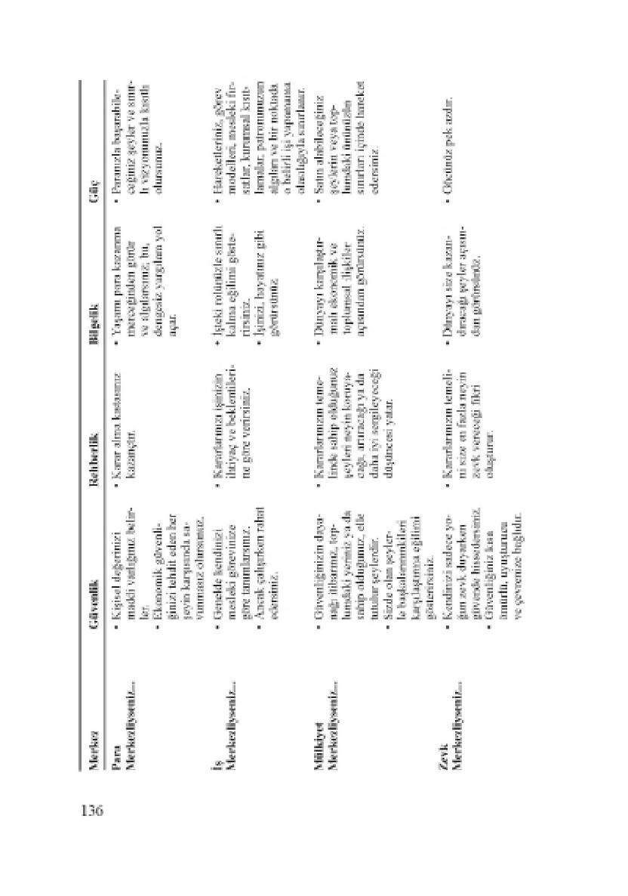
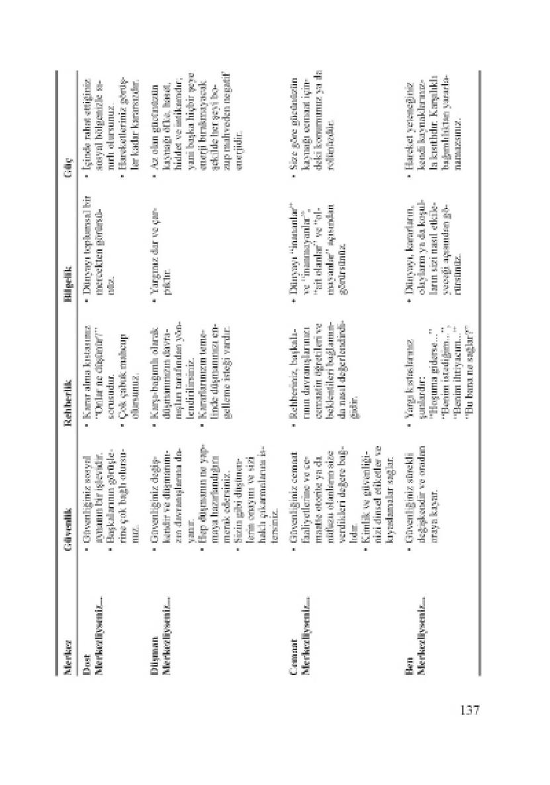
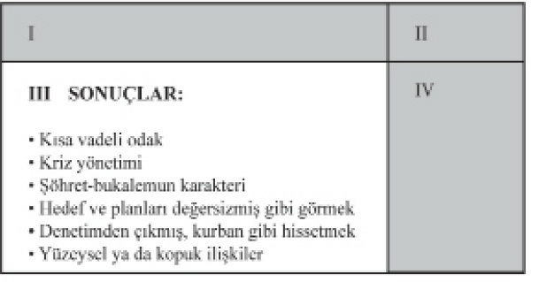

Bütün yaşamını, o
anda ve orada sağladığı zevke göre yorumlar.
Çok uzun süren çok fazla tatil, çok fazla film, çok fazla televizyon,
çok fazla video oyunu, kişinin asgari direnç göstermeyi seçtiği
çok uzun, disiplinsiz boş vakitler, bir yaşamı yavaş
yavaş mahveder.
Kişinin yeteneklerinin atıl kalmasına, becerilerinin gelişememesine,
zihninin ve ruhunun uyuşmasına, yüreğinin ise mutluluğu bulama131
masına neden olur. Güvenlik, rehberlik, bilgelik ve güç nerededir?
Bunlar, ölçeğin en alt noktasında, geçici bir anın zevkindedir.
Malcolm Muggeridge, “Bir Yirminci Yüzyıl Tanıklığı”
yazmış:
Son günlerde, arada bir yaptığım gibi geriye dönüp yaşantıma baktığımda beni en çok sarsan, bir zamanlar bana çok önemli ve cazip
gelen şeylerin şimdi boş ve saçma görünmesi oluyor. Örneğin, her türlü aldatıcı kisvesi içinde başarılar; tanınmak ve övülmek; para
kazanmak, ya da kadınları baştan çıkarmak, ya da yolculuğa çıkmak,
dünyanın bir orasına, bir burasına, Şeytan gibi bir aşağı bir yukarı gidip
gelmek, Gösteriş Dünyası’nın sunduğu şeyleri açıklamak ve yaşamak
gibi apaçık zevkler.
Geriye baktığımda, bütün bu kendini tatmin denemeleri, Pascal’in
“toprağı yalamak” dediği türden, salt fantezi gibi görünüyor.
DOST/DÜŞMAN MERKEZLİLİK: Gençler dost merkezli olmaya
özel ikle yatkındır. Ancak bu, salt onlara özgü bir şey değildir kuşkusuz.
Yaşıtlardan oluşan bir gruba girip kabul görmek, neredeyse
aşırı önemli hale gelebilir. Durmadan değişen çarpıtılmış sosyal ayna, yaşamı destekleyen dört etkenin kaynağı haline gelerek başkalarının
değişken ruh hal erine, duygularına, tutumlarına ve davranışlarına
çok büyük bir bağımlılık yaratabilir.
Dost merkezlilik ayrıca yalnız bir kişiye odaklanarak, evliliğin
bazı boyutlarını da üstlenebilir. Tek bir kişiye duygusal bağımlılık,
gitgide yükselen bir ihtiyaç/çatışma sarmalı ve bunların getireceği
olumsuz etkileşimler, dost merkezlilikten kaynaklanabilir.
Ya kişinin bir düşmanını yaşamının merkezine yerleştirmesine
ne demeli? Çoğunluk bunu düşünmez bile, herhalde kimse bunu
bilinçli olarak yapmaz. Yine de, düşmanın merkeze yerleştirilmesi
çok sık görülen bir durumdur; özel ikle de gerçekten anlaşmazlık
halindeki insanlar arasında sık sık etkileşim olduğu zaman. Duygusal
ya da sosyal açıdan önemli bir kişinin kendisine haksızlık ettiğini
düşünen birisi, yapılan haksızlığı alabildiğine büyütüp diğer insanı
kolaylıkla yaşamının merkezi haline getirebilir.
Düşman merkezli
kişi, kendi yaşamını proaktif bir biçimde sürdürmek yerine, karşıbağımlılık
göstererek düşman olarak algıladığı insanın tutum ve davranışlarına tepki verir.
Bir üniversitede ders veren bir dostum, olumsuz ilişki içinde olduğu
bir yöneticinin zayıflıkları yüzünden çok üzülüyordu.
Düşüncelerinin
hep ona kaymasına izin veriyordu; sonunda bu, saplantıya
dönüştü. Bu durum ailesi, mensubu olduğu cemaat ve iş arkadaşlarıyla
olan ilişkilerinin niteliğini de etkiledi. Arkadaşım sonunda
üniversiteden ayrılması gerektiğine karar vererek başka bir yerden
gelen öneriyi kabul etti.
“Adam orada olmasaydı, bu üniversitede ders vermeyi tercih etmez
miydin?” diye sordum ona.
“Evet, ederdim. Ama o burada olduğu sürece, üniversitede kalışım
bütün yaşamımı altüst ediyor. Gitmek zorundayım,”
diye yanıtladı.
“Neden bu yöneticiyi yaşamının merkezi haline getirdin?” dedim.
Bu soru onu çok sarsmıştı. İnkâra yeltendi. Ama ona, bir kişinin
ve onun zayıflıklarının bütün yaşam haritasını çarpıtmasına, inançlarını
ve sevdikleriyle olan ilişkilerinin niteliğini zedelemesine izin
verdiğini anımsattım.
Sonunda, o kişinin kendisini gerçekten fazlasıyla etkilediğini kabul
etti, ama bütün bu seçimleri kendisinin yaptığını kabule yanaşmadı.
Bu mutsuz durumdan yöneticiyi sorumlu tutuyordu.
Kendisinin
sorumlu olmadığını söylüyordu.
Konuşma sürerken, yavaş yavaş, gerçekten de sorumlu olduğunu;
ama bu sorumluluğu iyi taşıyamadığı için sorumsuzca davrandığını
anlamaya başladı.
Boşanmış olan birçok kişi de benzer eğilimler gösterir. Eski eşlerine
karşı hâlâ müthiş bir öfke ve kinle doludurlar ve kendilerini
haklı bulurlar. Olumsuz anlamda, psikolojik açıdan hâlâ evlidirler.
Suçlamalarını haklı çıkarmak için, eski eşlerinin zayıflıklarına ihtiyaçları
vardır.
Birçok “yaşlı” çocuk, yaşamını annesiyle babasından gizlice ya
da açıkça nefret ederek geçirir. Onları geçmişteki kötü davranışları,
ihmal eri ya da çocuklar arasında ayrım yaptıkları için suçlarlar. Yetişkinlik
dönemlerinin merkezi bu nefrettir. Ona eşlik eden doğrulayıcı,
reaktif senaryoyu yaşarlar.
Dost ya da düşman merkezli kişi içsel güvenlikten yoksundur.
Özgüven duyguları değişkendir, başkalarının davranışlarına ya da
duygusal durumlarına bağlıdır. Rehberliğinin kaynağı, diğer insanların
verecekleri tepkiye ilişkin kendi görüşüdür. Bilgeliği ise sosyal
mercek ya da düşman merkezli bir paranoya ile sınırlıdır. Bireyin
hiçbir gücü yoktur. İplerini başkaları çekmektedir.
CEMAAT MERKEZLİLİK: Bence bir cemaatle ciddi biçimde ilgisi
olan herkes, ibadet yerine gitmenin kişisel maneviyatla eş anlamlı
olmadığını kabul edecektir. Bazı kimseler kendilerini ibadete ve cemaat
projelerine öylesine kaptırırlar ki, etraflarındaki önemli insani
ihtiyaçlara karşı duyarsızlaşırlar. Böylece çok inandıklarını iddia ettikleri
ahlak kural arına aykırı davranmış olurlar. Bazıları ibadet yerine
daha az gider ya da hiç gitmez, ama tutum ve davranışları, dinin
temel ahlak ilkelerini merkez edindiklerini gösterir.
Yaşam boyu dini ve sosyal hizmetler veren gruplara katılmış biri
olarak, kiliseye gitmenin her zaman o toplantılarda öğretilen ilkelere
uyarak yaşamak anlamına gelmediğini öğrendim. Bir cemaatte
etkin olup, öğretisini etkin biçimde uygulamayabilirsiniz.
Cemaat merkezli bir yaşamda imaj ya da görünüş
kişi için çok
önemli hale gelebilir. Bu ise kişisel güvenliği ve doğuştan var olan
değer duygusunu azaltan bir ikiyüzlülüğe yol açar.
Rehberliğin kaynağı
toplumsal vicdandır, cemaat merkezli bir kişi ise başkalarına
“etkin”, “etkin değil”, “liberal”, “katı”, ya da “tutucu” gibi yapay
etiketler yapıştırma eğilimi gösterir.
Cemaat; siyasetler, programlar, uygulamalar ve insanlardan oluşan
formel bir topluluk olduğu için, kişiye kendi başına derin ve sürekli
bir güvenlik ya da içindeki değer hakkında bir fikir veremez.
Bunu, dinin öğrettiği ilkelere uyarak yaşamak sağlar; ama topluluk
tek başına sağlayamaz.
Cemaat, insana devamlı rehberlik de edemez.
insanlar birtakım bölmelerde yaşamaya eğilimlidir.
Haftanın bir
günü bel i bir biçimde davranır, düşünür ve hissederler, diğer günlerinde
ise başka türlü. Bu tür bir bütünlük, birlik ya da dürüstlük ek134
sikliği, güvenlik açısından daha da tehlikelidir. Kişinin başkalarına
etiket yapıştırma ve kendini haklı görme ihtiyacını da artırır.
Cemaati amaca yönelik bir araç değil de, bir amaç gibi görmek,
kişinin bilgeliğini ve denge duygusunu zayıflatır.
Cemaat, insanlara
güç kaynağını öğretme iddiasını taşısa da, hiçbir zaman bu gücün
kendisi olduğunu öne sürmez. Örneğin kilise, ilahi gücün insan doğasına
akıtıldığı kanal ardan biri olduğunu öne sürer.
BEN MERKEZLİLİK: Belki de günümüzde en yaygın merkez,
ben’dir. En belirgin biçimi de, çoğu kişinin değerlerini çiğneyen
bencil iktir. Gelişim ve kendi arzularını gerçekleştirmeye yönelik
popüler yaklaşımlara yakından bakarsak, özünde ben merkezliliği
görürüz.
O kısıtlı “ben” merkezinde pek az güvenlik, rehberlik, bilgelik
ve güç vardır. İsrail’deki Ölü Deniz gibi her şeyi içine alır, ama karşılığında
hiçbir şey vermez. Durağanlaşır.
Öte yandan, hizmet etme, üretme, anlamlı katkılarda bulunma
yeteneğini iyileştirmek açısından kendini geliştirmeye dikkat göstermek,
yaşamı destekleyen dört etkenin çarpıcı biçimde büyümesi
için gereken bağlamı oluşturur.
Bunlar, sık rastlanan hayata yaklaşım merkezlerinden bazılarıdır.
İnsanın kendi yaşam merkezini değil de, bir başkasınınkini görmesi
çoğu zaman daha kolaydır. Para kazanmaya her şeyden fazla önem
veren, ya da bütün enerjisini olumsuz bir ilişkiyi
sürdürmeye harcayan
biriyle herhalde tanışmışsınızdır. Dikkatle bakarsanız, bazen
davranışlarının gerisinde bunları yaratan merkezi görebilirsiniz.
KENDİ MERKEZİNİZİ SAPTAMAK
Peki siz ne durumdasınız? Kendi yaşamınızın merkezinde ne
var? Bazen bunu görmek kolay değildir.
Belki de kendi merkezinizi tanımanızın en iyi yolu yaşamı destekleyen
etkenlere yakından bakmaktır. Aşağıdaki bir ya da birkaç
tanıma uyuyorsanız, onları izleyerek çıktıkları merkezi bulabilirsiniz.
Bu merkez kişisel etkililiğinizi kısıtlıyor olabilir.


Bir insanın merkezi çoğu zaman bunların ve/veya diğer merkezlerin
bir karışımıdır. Çoğu kişi, yaşamında büyük rolü olan çeşitli
etkilere maruz kalır. İç ya da dış etkenlere bağlı olarak, belirli bir
merkez, temelindeki ihtiyaçlar karşılanıncaya kadar harekete geçirilebilir.
Sonra da bir başka merkez itici güç olur.
Kişi bir merkezden diğerine geçtikçe ortaya çıkan görecelik,
yaşam boyu yükselip alçalan bir lunapark treni gibidir. Bir zayıflığı
dengelemek için bir başka zayıflıktan güç alır. Ne tutarlı bir yön
duygusu vardır, ne sürekli bir bilgelik, ne de sabit bir güç kaynağı
veya kişisel, doğuştan gelen bir değer ve kimlik duygusu.
İdeal olan, kuşkusuz, size sürekli olarak yüksek derecede güvenlik,
rehberlik, bilgelik ve güç aktaracak tek bir belirgin merkez yaratmaktır.
Bu, proaktivitenizi güçlendirir ve yaşamınızın her açıdan
uyumlu ve tutarlı olmasını sağlar.
Hayatımızın merkezini doğru ilkeler üzerine oturtursak, yaşamı
destekleyen dört etkenin gelişmesi için sağlam bir temel yaratmış
oluruz.
Güvenliğimizi şu bilgi sağlar: İnsanlar ya da nesnelere dayanan
ve sık sık, çabucak değişen diğer merkezlerin tersine, doğru ilkeler
hiç değişmez. Onlara güvenebiliriz.
İlkeler hiçbir şeye tepki vermezler. Öfkelenip bize farklı bir biçimde
davranmazlar. Bizi boşamaz ya da en yakın dostumuzla kaçmazlar.
Amaçları bizi ele geçirmek değildir. Yolumuzu kestirme çözümler
ve anlık çarelerle döşeyemezler. Geçerlilikleri, başkalarının
davranışlarına, çevreye ya da geçici güncel heveslere bağlı değildir.
İlkeler ölmez. Bugün buradayken yarın yitip gitmezler.
Yangın, deprem
ya da hırsızlıkla yok edilemezler.
İlkeler derin, temel gerçeklerdir. Klasik gerçeklerdir.
İnsanlığın
ortak paydasıdır. Yaşamı kusursuz, tutarlı, güzel ve güçlü bir biçimde
sımsıkı dokuyan ipliklerdir.
İlkelere aldırmıyormuş gibi görünen insanlar ya da koşul ar ortasında
bulunsak bile, ilkelerin insanlardan ya da koşul ardan büyük
olduğunu; tekrar tekrar kazandıkları zaferlere binlerce yıl ık tarihin
tanıklık ettiğini bilmek bize güven verir. Daha da önemlisi, ilkeleri
kendi yaşamımızda, kendi deneyimlerimizle geçerli kılabileceğimizi
bilmek içimizi rahatlatır.
Kuşkusuz, her şeyi bilemeyiz. Gerçek doğamızın ve etrafımızdaki
dünyanın yeterince farkında olmayışımız kadar, doğru ilkelerle
uyum içinde olmayan modaya uygun felsefe ve kuramlar seli de,
doğru ilkelere ilişkin bilgi ve anlayışımızı kısıtlar. Bu fikirler bir süreliğine
kabul görür, ama kendilerinden öncekiler gibi sahte temel er
üzerine kuruldukları için dayanıklı değildirler.
Her şeyimiz sınırlıdır, ama sınırlarımızı genişletebiliriz.
Kendi
gelişmemizle ilgili ilkeyi anlamamız, ne kadar çok şey öğrenirsek
dünyaya bakış açımızı oluşturan merceğin odak noktasını o kadar
net bir biçimde ayarlayabileceğimize güvenerek, doğru ilkeleri araştırmamızı
sağlar. İlkeler değişmez; onları kavrayışımız değişir.
İlke merkezli yaşama eşlik eden bilgelik ve rehberlik, her şeyin
dün ve bugün nasıl olduğunu, ileride nasıl olacağını gösteren doğru
haritalardan gelir. Doğru haritalar nereye gitmek istediğimizi ve
oraya nasıl ulaşacağımızı açıkça görmemizi sağlar.
Kararlarımızı,
uygulanmalarını mümkün ve anlamlı kılacak doğru verileri kul anarak verebiliriz.
İlke merkezli yaşamın sağladığı kişisel güç, kendini tanıyan, bilgili,
proaktif bireyin gücüdür. Onu başkalarının tutumları, davranışları
ve hareketleri ya da başkalarını kısıtlayan koşul ar ve çevresel
etkiler sınırlayamaz.
Gücün tek gerçek sınırı, ilkelerin kendi doğal sonuçlarıdır. Doğru
ilkelere ilişkin bilgimize dayalı olarak, eylemlerimizi seçmekte
özgürüz; ama o eylemlerin sonuçlarını seçme özgürlüğüne sahip değiliz.
Unutmayın ki, “Değneği bir ucundan tutup kaldırırsanız, diğer
ucunu da kaldırırsınız.”
İlkelerin her zaman kendilerine bağlı doğal sonuçları vardır.
İlkelerle uyum içinde yaşarsak, sonuç olumlu olur.
Onları gözardı
edersek, olumsuz olur. Ancak söz konusu ilkeler herkes için geçerli
olduğundan, farkında olunsa da olunmasa da, bu 
sınırlama evrenseldir.
Doğru ilkeleri ne kadar iyi öğrenirsek, akıl ıca hareket etme konusundaki
kişisel özgürlüğümüz de o kadar geniş olur.
Yaşantımızın merkezine, zaman aşımına uğramayan, değişmeyen
ilkeleri yerleştirirsek, etkili hayatın temel paradigmasını yaratmış
oluruz. Bu, diğer merkezlerin tümünü perspektife oturtan merkezdir.
Unutmayın, paradigmanız, tutum ve davranışlarınızın kaynağıdır.
Paradigma, gözlüğe benzer. Hayatınızdaki her şeyi görme biçiminizi
etkiler. Olaylara doğru ilkeler paradigması aracılığıyla bakarsanız,
hayatta gördüğünüz şeyler, değişik merkezli herhangi bir
paradigmanın merceğinden gördüklerinizden hayli farklı olur.
Bu kitabın Ek bölümüne ayrıntılı bir cetvel ekledim.
Bu, incelediğimiz
her merkezin başka şeyleri nasıl etkileyebileceğini gösteri—
yor1. Ancak merkezin yarattığı değişikliği çabucak anlamanız için,
belirli bir sorunun farklı paradigmalardan nasıl görüldüğüne ilişkin
tek bir örneğe bakalım. Okurken, her gözlüğü takmaya, farklı merkezlerden kaynaklanan tepkiyi hissetmeye çalışın.
Diyelim ki bu akşam eşinizi bir konsere davet ettiniz.
Biletleri
de aldınız. Eşiniz konsere gideceği için çok sevinçli.
Öğleden sonra
saat dört.
Ansızın patronunuz sizi odasına çağırıyor ve yarın saat 9.00’da
yapılacak önemli bir toplantıya hazırlanmak için bütün gece kendisine
yardım etmeniz gerektiğini söylüyor.
Eğer eş merkezli ya da aile merkezli bir gözlükle bakıyorsanız,
aklınız eşinizde olacaktır. Patronunuza kalamayacağınızı söyleyip
eşinizi hoşnut etmek için onu konsere götürebilirsiniz.
İşinizden olmamak
için orada kalmanız gerektiğini düşünebilirsiniz, ama bunu
istemeyerek, eşinizin göstereceği tepkiden kaygılanarak, kararınızı
haklı göstermeye ve kendinizi onun öfkesine ya da düş kırıklığına
karşı korumaya çalışarak yaparsınız.
Eğer para merkezli bir mercekten bakıyorsanız; ilk önce alacağınız
fazla mesai ücretini ya da geç vakitlere kadar çalışmanın işyerinde
yükselmenizi nasıl etkileyeceğini düşünürsünüz.
Eşinizi arayıp,
ekonomik gereksinimlerin önceliğini anlayacağını varsayarak ona
sadece büroda kalmanız gerektiğini söyleyebilirsiniz.
Eğer iş merkezliyseniz; fırsatları düşünürsünüz. İş
konusunda
daha fazla bilgi edinebilirsiniz. Patronun gözüne girip kariyerinizde
ilerleyebilirsiniz. İstenilenden çok daha fazla çalıştığınız için kendi
kendinizi kutlayabilirsiniz. Bunun ne kadar çalışkan olduğunuzu kanıtlayacağına
inanırsınız. Karınız sizinle gurur duymalıdır!
Eğer mülkiyet merkezliyseniz; fazla mesai ücretiyle alabileceklerinizi
düşünürsünüz. Ya da kaldığınız takdirde bunun bürodaki itibarınız
açısından ne büyük bir kaynak olacağını dikkate alabilirsiniz.
Ertesi sabah herkes sizin ne kadar soylu, özverili ve işine bağlı bir
insan olduğunuzu öğrenecektir.
(1) Bkz. A Eki.
Eğer zevk merkezliyseniz; geç saatlere kadar çalışmanız karınızı
mutlu edecek olsa bile, muhtemelen işi kenara itip konsere gidersiniz.
Geceyi dışarıda geçirmek en doğal hakkınızdır!
Eğer dost merkezliyseniz; kararınız herhalde arkadaşlarınızı da
konsere davet edip etmediğinize, ya da işteki arkadaşlarınızın da geç
vakitlere kadar çalışıp çalışmayacaklarına bağlı olacaktır.
Eğer düşman merkezliyseniz; büroda kendisini şirketin en değerli
elemanı sayan birine karşı büyük bir avantaj sağlayacağınızı
bilerek geç saatlere kadar kalabilirsiniz. O dışarıda keyfine bakarken,
siz köle gibi çalışıp hem kendi işinizi hem de onunkini yaparak,
onun umursamadığı şirket çıkarları uğruna kendi zevkinizi feda
edersiniz.
Eğer cemaat merkezliyseniz; cemaatin diğer üyelerinin konsere
gidip gitmeyecekleri, bazılarının iş yerinizde çalışıp çalışmadıkları,
ya da bunun nasıl bir konser olduğu kararınızı etkileyebilir. Händel’in
Mesih’i bir rock konserinden daha öncelikli olabilir.
Kararınızı,
“iyi bir cemaat üyesi”nin yapacağını düşündüğünüz şeyler, ya
da fazla mesaiye “hizmet” veya “maddi zenginlik peşinde olmak”
gözüyle bakıp bakmadığınız da etkileyebilir.
Eğer ben merkezliyseniz; dikkatinizi size en fazla çıkar sağlayacak
şeye verirsiniz. Bu akşamı dışarıda geçirmek mi daha iyi olur?
Yoksa patronun gözüne girmek mi? Değişik seçeneklerin sizi nasıl
etkileyeceğiyle ilgilenirsiniz.
Tek bir olaya bakmanın farklı yol arını incelerken, birbirimizle
etkileşimlerimizde “genç hanım/yaşlı hanım” benzeri algılama sorunlarıyla
karşılaşmamıza şaşmamak gerekir. Merkezlerimizin bizi
temelde nasıl etkilediklerini görebiliyor musunuz?
Motivasyonlarımızın,
günlük kararlarımızın, eylemlerimizin (hatta çoğu kez tepkilerimizin),
olaylar hakkındaki yorumlarımızın bunlara bağlı olduğunu
görebiliyor musunuz? Kendi merkezinizi anlamanız işte bu
yüzden çok önemlidir. Ve bu merkez size proaktif bir kişi olarak güç
katmıyorsa, bunu yapacak bir merkez yaratmak için gerekli paradigma
değişikliğini yapmanız, etkililiğinizin temeli olacaktır.
İlke merkezli bir kişi olarak, durumun yarattığı duygulardan ve
sizi etkileyecek diğer faktörlerden uzak durmaya çalışırsınız. Seçenekleri
değerlendirirsiniz. Dengeli bütüne –iş ihtiyaçları, aile ihtiyaçları,
işin içine girebilecek diğer tüm ihtiyaçlar ve değişik kararların
olası sonuçları– bakarak ve tüm etkenleri hesaba katarak, en iyi
çözümü bulmaya çalışırsınız.
Konsere gitmeniz ya da iş yerinde kalıp çalışmanız, etkili bir kararın
küçük bir parçasıdır aslında. Aynı seçimi diğer merkezlerden
birkaçıyla da yapabilirsiniz. Ancak ilke merkezli paradigmadan hareket
ediyorsanız, arada çok önemli bazı farklar vardır.
Birincisi, başka insanların ya da koşul arın etkisi altında kalmazsınız.
En iyi seçenek olduğuna karar verdiğiniz şeyi proaktif bir biçimde
seçersiniz. Kararınızı bilinçli olarak ve bilginize dayanarak
verirsiniz.
İkincisi, kararınızın en etkili seçenek olduğunu bilirsiniz; çünkü
uzun vadede tahmin edilebilir sonuçları olan ilkelere dayalıdır.
Üçüncüsü, yapmayı seçtiğiniz şey hayattaki nihai değerlerinize
katkıda bulunur. İşyerinde birini geçebilmek amacıyla geç saatlere
kadar çalışmakla, patronunuzun etkililiğine değer verdiğiniz ve şirketin
geleceğine gerçekten katkıda bulunmak istediğiniz için fazla
mesai yapmak, birbirinden tümüyle farklıdır.
Kararlarınızı uygularken
edindiğiniz deneyimler, bir bütün olarak yaşamınıza nitelik ve
anlam kazanır.
Dördüncüsü, karşılıklı bağımlı ilişkilerinizde yarattığınız güçlü
ağ içinde eşiniz ve patronunuzla iletişim kurabilirsiniz.
Bağımsız
olduğunuz için, etkili bir biçimde karşılıklı bağımlı olabilirsiniz.
Başkalarına devredilebilecek görevleri bırakmaya karar verip, geride
kalanları yapmak üzere ertesi sabah erkenden işyerine gelebilirsiniz.
Son olarak da, kararınız sizi rahatsız etmez. Yapmayı seçtiğiniz
şey her ne ise, ona odaklanıp tadını çıkarabilirsiniz.
İlke merkezli bir kişi olarak her şeyi farklı bir biçimde görürsünüz.
Her şeyi farklı biçimde gördüğünüz için de farklı düşünür, farklı
davranırsınız. Değişmeyen, sağlam bir özden kaynaklanan yüksek
düzeyde güvenlik, rehberlik, bilgelik ve gücünüz sayesinde çok proaktif
ve etkili bir yaşamın temeline sahip olursunuz.
KİŞİSEL MİSYON BİLDİRGESİNİN
YAZIM VE KULLANIMI
İçimizin derinliklerine inerek temel paradigmalarımızı anlayıp,
onları doğru ilkelerle uyum sağlayacak biçimde yeniden hizaya
getirirken, hem etkili, güç verici bir merkez, hem de dünyayı görebileceğimiz
berrak bir mercek yaratırız. Daha sonra bu mercek aracılığıyla, benzersiz bireyler olarak dünyayla nasıl iletişim kurduğumuza
bakabiliriz.
Frankl, hayattaki misyonlarımızı icat etmekten çok, keşfettiğimizi
söyler. Seçtiği bu sözler hoşuma gidiyor. Bence hepimizin içinde
bir monitör ya da duyu, bir vicdan var. Bu, kendi benzersizliğimizin
ve yapabileceğimiz eşsiz katkıların farkına varmamızı sağlıyor.
Frankl’in ifadesiyle, “Herkesin hayatta kendine özgü bir görevi ya
da misyonu vardır. (...) Bu nedenle, kişinin ne yeri doldurulabilir, ne
de yaşamı tekrarlanabilir. Kısacası herkesin görevi, onu yerine getirmek
için eline geçen özgül fırsatlar kadar benzersizdir.”
Bu benzersizliği sözle ifade etmeye çalışırken, bize yine proaktivitenin
ve Etki Alanımız içinde çalışmanın temel önemi hatırlatılıyor.
Hayatımızın soyut anlamını İlgi Alanımızın dışında aramak,
proaktif sorumluluğumuzdan vazgeçmek, ilk yaratımımızı koşul arın ve başka insanların eline teslim etmek demektir.
Anlamımız içimizden gelir. Yine Frankl’in ifadesiyle, “Sonuç
olarak insan, hayatının ne anlama geldiğini sormak yerine, o sorunun
kendisine sorulduğunu anlamalıdır. Kısacası, her insan hayat tarafından
sorgulanır ve hayata yanıtını ancak kendi hayatı adına verebilir;
hayata ancak sorumluluğunu kabul ederek karşılık verebilir.”
Kişisel sorumluluk ya da proaktivite, ilk yaratımın temelini oluşturur.
Yine bilgisayar benzetmesine dönecek olursak, 1.
Alışkanlık,
“Sen programlayıcısın,” der. Bunun üzerine 2.
Alışkanlık şöyle söyler:
“Programı yaz.” Sorumlu ya da programcı olduğunuz fikrini ka146
bul edinceye kadar, programın yazılmasına gerçek anlamda yatırım
yapmazsınız.
Proaktif insanlar olarak, hayatımızda ne olmak ve ne yapmak istediğimizi
ifade etmeye başlayabiliriz. Kişisel bir misyon bildirgesi,
kişisel bir anayasa yazabiliriz.
Misyon bildirgesi, bir gecede yazacağınız bir şey değildir. İçinize
derinlemesine bir bakış, dikkatli bir analiz ve düşünceli bir ifade
ister. Çoğu zaman, bildirge son şeklini alıncaya kadar tekrar tekrar
yazılması gerekir. Tam istediğiniz gibi oluncaya kadar, yani en derin
değer ve yönelimlerinizin eksiksiz ve kesin bir ifadesi olduğunu
hissedinceye kadar birkaç hafta, hatta aylar geçebilir. Yine de, yıl ar
içinde değişik koşul ar ortaya çıktıkça ve yeni içgörüler edindikçe,
onu düzenli bir biçimde gözden geçirmek ve ufak tefek değişiklikler
yapmak isteyeceksiniz.
Ama temelde, misyon bildirgeniz kendi anayasanız, vizyon ve
değerlerinizin sağlam bir ifadesi olur. Yaşamınızdaki her şeyi ölçmek
için başvurduğunuz kıstas haline gelir.
Geçenlerde kendi misyon bildirgemi yeniden gözden geçirdim.
Bunu sık sık yaparım. Bisikletle gittiğim bir kıyıda yalnız başıma
otururken anayasamı çıkardım ve çekidüzen verdim.
Bu iş birkaç
saatimi aldı, ama bir açıklık, düzen ve bağlılık duygusu, bir coşku
ve özgürlük hissettim.
Bence bu süreç, ürün kadar önemlidir. Bir misyon bildirgesi yazmak
ya da onu gözden geçirmek sizi değiştirir; çünkü sizi önceliklerinizi
derinlemesine ve dikkatlice düşünmeye ve davranışlarınızı
inançlarınızla uyumlu hale getirmeye zorlar. Siz bunu yaparken,
başkaları da, yaşadığınız şeyler tarafından yönlendirilmediğinizi
sezmeye başlar. Yapmaya çalıştığınız iş hakkında bir misyon duygunuz
olur ve bu da size heyecan verir.
Özbilincimiz, kendi düşüncelerimizi incelememiz için bize güç
verir. Kişisel bir misyon bildirgesinin yaratılmasına özel ikle yardımcı
olur, çünkü 2. Alışkanlığı uygulamamızı sağlayan, insanlara
özgü o iki eşsiz yeti –hayal gücü ve vicdan– gerçekte beynin sağ ya
nının işlevleridir. Bu sağ beyin kapasitesinden nasıl yaralanacağımızı
anlamak, ilk yaratım yeteneğimizi büyük ölçüde artırır.
“Beyin egemenliği” kuramı diye bilinen konu üzerinde onyıl arca
araştırma yapıldı. Bulgular, esas olarak beynin her bir yarıküresinin
–sol ve sağ– farklı işlevlerde uzmanlaşma ve o işlevlere
gözcülük etme eğilimi gösterdiğini, farklı türden bilgileri işlemden
geçirdiğini ve farklı türden sorunlarla ilgilendiğini gösteriyor.
Temelde, sol yarıküre daha mantıksal/sözel; sağ
yarıküre ise daha
sezgisel, yaratıcı olandır. Sol yarıküre sözcüklerle ilgilenir, sağ
ise resimlerle. Sol, parçalar ve özel iklerle uğraşır; sağ, bütünler ve
parçalar arasındaki ilişkilerle. Sol, analizle, yani parçalara ayırmakla
ilgilenir; sağ, sentezle, yani parçaları bir araya getirmekle. Sol, ardışık
düşünmeyle ilgilenir; sağ, eşzamanlı ve bütüncül düşünmeyle.
Sol zamana bağlıdır; sağ zamandan bağımsızdır.
İnsanlar beynin her iki yanını da kul anırlar. Ancak genel ikle
her bireyde sağ ya da sol yan ağır basar. Kuşkusuz ideal olan, her iki
yan arasında sağlam bir köprü kurma yeteneğini beslemek ve geliştirmektir.
Böylece önce durumun neyi gerektirdiği sezilir, sonra da
onunla başa çıkmak için uygun araç kul anılır. Ancak insanlar baskın
yarıkürenin “rahatlık bölgesi”nde kalıp her durumu sağ
ya da sol
beyin tercihine göre işlemden geçirme eğilimi gösterirler.
Abraham Maslow’un dediği gibi: “Çekiç kul anmayı iyi bilen
biri, her şeyin bir çivi olduğunu düşünme eğilimindedir.” Bu da
“Genç hanım/yaşlı hanım” algısındaki farkı belirleyen bir diğer etkendir.
Sağ beynini kul anan insanlarla sol beynini kul ananlar, her
şeye farklı bir biçimde bakma eğilimi gösterirler.
Biz, aslında sol beynin egemen olduğu bir dünyada yaşıyoruz.
Burada sözcüklere, ölçülere ve mantığa büyük değer veriliyor. Doğamızın
daha yaratıcı, sezgisel ve sanatsal yanı ise çoğu zaman ikinci
plana itiliyor. Birçoğumuz, sağ beynin kapasitesinden yararlanmakta
daha fazla zorlanıyor.
Kabul etmek gerekir ki bu, fazlasıyla basitleştirilmiş
bir tanımlamadır
ve yeni çalışmalar kuşkusuz beynin işleyişini daha iyi aydınlatacaktır.
Ancak burada önemli olan, çok farklı türden düşünce işlemlerini
yapma yeteneğine sahip olduğumuz halde potansiyelimi148
zi neredeyse hiç kul anmamamızdır. Değişik kapasitelerinin farkına
varırken, zihnimizi bilinçli olarak belirli gereksinimleri daha etkili
biçimde karşılamak için kul anabiliriz.
SAĞ BEYİNDEN YARARLANMANIN
İKİ YOLU
Beyin egemenliği kuramını bir model olarak kul anırsak, ilk
yaratımızın niteliğinin sağ beynimizin yaratıcılığını kul anma yeteneğimizden büyük ölçüde etkileneceği açıklık kazanır. Sağ beyin kapasitemizden ne kadar yararlanırsak; hayal etme, sentez yapma,
zamanı ve mevcut koşul arı aşma, ne olmak ve ne yapmak istediğimizle
ilgili bütüncül bir resim yaratma gücümüz de o kadar artacaktır.
Bakış Açısını Genişletmek
Bazen beklenmedik bir deneyim yüzünden sol beyin çevremizden
ve düşünce kalıplarından fırlayıp sağ beyne geçeriz.
Sevilen birinin
ölümü, ciddi bir hastalık, mali bir sıkıntı ya da aşırı bir rekabet,
geriye çekilerek yaşantımıza bakıp kendimize “Aslında önemli olan
nedir? Yapmakta olduğum işi neden yapıyorum?”
türünden çetin sorular
sormamıza neden olabilir.
Ama proaktifseniz, bakış açınızı genişletecek deneyimleri yaratmak için koşul arı ya da başkalarını beklemenize gerek kalmaz. Onları
bilinçli bir biçimde kendiniz yaratabilirsiniz.
Bunu yapmanın birkaç yolu vardır. Hayal gücünüzün yardımıyla,
bu bölümün başında yaptığımız gibi kendi cenaze töreninizi gözünüzün
önünde canlandırabilirsiniz. “Merhumu nasıl tanırdınız?”
sorusunun yanıtını yazabilirsiniz. Gerçekten oturup yazın. Hem de
ayrıntılı olarak.
Yirmi beşinci, sonra da el inci evlilik yıldönümünüzü gözünüzün
önüne getirebilirsiniz. Eşinizin bunu sizinle birlikte yapmasını sağlayın.
Bu kadar yıl boyunca günbegün yaptığınız yatırımlar yoluyla
yaratmak istediğiniz aile ilişkilerinin özünü yakalamaya çalışın.
Şimdiki işinizden emekliye ayrılışınızı da gözünüzün önüne getirebilirsiniz.
Kendi alanınızda ne tür başarılara erişmek, ne tür kat149
kılarda bulunmak isterdiniz? Emeklilik sonrası için planlarınız neler
olacak? İkinci bir meslek mi edineceksiniz?
Düşüncenizi genişletin. Bütün ayrıntıları gözünüzün önüne getirin.
Onlara olabildiğince duygu ve heyecan katın.
Duyularınızdan
da olabildiğince yararlanın.
Üniversitede ders verirken, bazı sınıflarda buna benzer göz
önünde canlandırma alıştırmaları yapardım. “Yaşam sürenizin bu
yarı yıl a kısıtlı olduğunu varsayın,” derdim öğrencilerime, “ve bu
yarı yıl boyunca iyi bir öğrenci olarak okulda kalacaksınız. Şimdi bu
süreyi nasıl geçireceğinizi hayal edin!”
Bu durumda her şeye bakış açısı birdenbire değişir.
Daha önce
fark edilemeyen bazı değerler yüzeye çıkar.
Öğrencilerimden ayrıca, bir hafta boyunca bu genişlemiş bakış
açısıyla yaşamalarını ve bir günlük tutarak deneyimlerini yazmalarını
da isterdim.
Sonuçlar çok şeyi açığa çıkarır. Öğrenciler anne-babalarına mektup yazmaya ve onları ne kadar sevdiklerini ve takdir ettiklerini
açıklamaya başlarlar. Aralarının bozuk olduğu bir erkek ya da kız
kardeşle, bir arkadaşla barışırlar.
Faaliyetlerine egemen olan ana unsur, temeldeki ilke, sevgidir.
Yaşanacak pek az bir süreleri kaldığını düşündüklerinde, dedikodunun,
kötü düşüncelerin, aşağılamaların ve suçlamaların yararsızlığı
ortaya çıkar. İlkeler ve değerler herkesin gözünde daha fazla açıklık
kazanır.
Değerlerinizle bağlantı kurmak için hayal gücünüzü kul anmanın
bazı teknikleri vardır. Ancak kul andığımız her tekniğin net etkisi
aynıdır. İnsanlar hayatlarında kendileri için en önemli şeyin ne
olduğunu, ne yapmayı ve nasıl olmayı istediklerini ciddi bir biçimde
belirlemeye karar verdikleri zaman çok saygılı olurlar.
aşacak çapta düşünmeye başlarlar.
Göz Önünde Canlandırma ve Onaylama
Kişisel liderlik tekil bir deneyim değildir. Kişisel bir misyon bildirgesi
yazmakla başlayıp bitmez. Aslında bu, vizyonunuzu ve de150
ğerlerinizi göz önüne alıp hayatınızı bu en önemli şeylerle uyumlu
olacak şekilde düzenleme sürecidir. Kişisel misyon bildirgenizi yaşantınıza
katmaya çalışırken harcadığınız çabada, güçlü sağ
beyin
kapasiteniz size her gün büyük ölçüde yardımcı olabilir. Bu, “sonunu
düşünerek işe başlama”nın bir başka uygulamasıdır.
Daha önce sözünü ettiğimiz örneğe geri dönelim: Diyelim ki
ben, çocuklarını gerçekten çok seven bir babayım.
Yine diyelim ki,
kişisel misyon bildirgemde bunu temel değerlerimden biri olarak belirtiyorum. Ancak günlük yaşantımda aşırı tepki gösterdiğim için
başım dertte.
Bu durumda sağ beynimin göz önünde canlandırma yeteneğinden
yararlanarak, günlük yaşantımda daha derin değerlerimle daha
uyumlu olmama yardım edecek bir “onaylama”
yazabilirim.
İyi bir onaylamanın beş temel özel iği vardır.
Kişiseldir, pozitiftir,
şimdiki zamanlıdır, görseldir ve duygusaldır. Bu nedenle şöyle
bir şey yazabilirim: “Çocuklarım yaramazlık yaptıklarında onlara
bilgece, sevgiyle, kararlı bir biçimde ve özdenetimle (olumlu) tepki
veriyorum (şimdiki zaman), bu beni (kişisel) çok tatmin ediyor
(duygusal).”
Sonra bunu hayalimde canlandırabilirim. Her gün birkaç dakika
harcayarak, zihnimi ve bedenimi tam anlamıyla gevşetebilirim. Çocuklarımın
yaramazlık edebilecekleri durumları düşünebilirim.
Bütün
bunları en ince ayrıntılarına kadar hayal ederim.
Üzerinde oturduğum
koltuğun dokusunu, ayaklarımın altındaki zemini, sırtımdaki
kazağı hissederim. Kızımın üzerindeki giysiyi ve yüzündeki ifadeyi
görebilirim. Ayrıntıları ne kadar aydınlık ve canlı olarak hayal edersem,
olayı da o kadar derinden hissederim. Böylece ona bir seyirci
gibi bakmaktan kurtulurum.
Sonra kızımın, genelde kalbimin hızla çarpmasına ve tepemin
atmasına yol açan belirli bir şeyi yaptığını görebilirim.
Ama normal
tepkimi görmek yerine, duruma, onaylayıcı ifademde yakaladığım
bütün o sevgi, güç ve özdenetimle karşılık verdiğimi görebilirim.
Programı, senaryoyu, değerlerimle, kişisel misyonumla uyum sağlayacak
bir biçimde yazabilirim.
Ve bunu yaparsam, davranışlarım günden güne değişir. Annemle
babam, toplum, soyaçekim ya da çevrem tarafından bana aktarılan
senaryo yerine, seçimi bana ait olan değerler sistemine göre yazmış
olduğum senaryoyu yaşarım.
Oğlum Sean’a, bu onaylama sürecini futbol yaşamında kapsamlı
olarak kul anması için yardım edip ona cesaret verdim. Buna lise
takımında oyun kurucusu olduğu sırada başladık ve sonunda, bu işi
kendi kendine nasıl yapacağını öğrettim.
İçten içe sakinleşmesi için, derin nefes alıp verme ve kas gevşetme
tekniğiyle zihninin iyice rahatlamasını sağlamaya çalışıyorduk.
Sonra da aklına gelebilecek en berbat durumlarla baş başa kaldığını
gözünde canlandırmasına yardımcı oluyordum.
Sean, hayalinde hızla üzerine doğru gelen bir saldırı canlandırıyordu.
Bu yıldırım gibi saldırıyı yorumlayıp karşılık vermesi gerekiyordu. Savunma taktiğini oluşturduktan sonra yanındakilere
talimat verdiğini hayal ediyordu. Pas atacağı birinci, ikinci, üçüncü
oyuncularla çabucak anlaştığını getiriyordu aklına.
Normalde göz
önüne getirmeyeceği seçenekleri hayalinde canlandırıyordu.
Futbol yaşamının bir noktasında, sürekli gerginleştiğini söyledi
bana. Aramızda konuşurken, onun gerginliği hayal ettiğini fark ettim.
Bu nedenle aşırı baskı altında olduğu bir anda gevşemeyi hayalinde
canlandırması üzerinde çalıştık. Göz önünde canlandırmanın
doğasının çok önemli olduğunu keşfettik. Gözünüzde yanlış şeyi
canlandırırsanız yanlış sonuca yol açarsınız.
Dr. Charles Garfield hem spor ve hem de iş alanında yüksek
performans gösteren insanlar üzerinde kapsamlı araştırmalar yaptı.
NASA programındaki çalışmalarında doruk performans çok ilgisini
çekmiş, astronotların uzaya çıkmadan önce her şeyi bir simulasyon
ortamında tekrar tekrar prova etmelerini seyretmişti.
Matematik dalında
bir doktora sahibi olmasına karşın, okula dönüp psikoloji alanında
da doktora yapmaya ve doruk performans gösteren kişilerin
niteliklerini incelemeye karar verdi.
Dr. Garfield’in araştırmalarının ortaya çıkardığı temel olgulardan
biri de şuydu: Dünya çapındaki atletler ve doruk performans
gösteren diğer kişiler, olayları gözlerinin önünde canlandırabiliyorlardı.
Olayı önce görüyor, hissediyor, yaşıyor, sonra da gerçekleştiriyorlardı.
Sonunu düşünerek işe başlıyorlardı.
Bunu yaşamınızın her alanında yapabilirsiniz. Bir performans,
bir ürün tanıtımı, zor bir karşılaşma ya da günlük bir hedefe varma
mücadelesinden önce olayı açıkça, canlı bir biçimde, amansızca,
tekrar tekrar görün. İçinizde bir “rahatlık bölgesi”
yaratın. Bunun
ardından içine girdiğiniz durum size yabancı gelmeyecek, sizi korkutmayacaktır.
Yaratıcı ve görsel olan sağ beyniniz, hem kişisel misyon bildirgenizi
oluşturmanız, hem de onu yaşamınızla bütünleştirmeniz açısından,
en önemli kaynaklarınızdan biridir.
Göz önünde canlandırma ve onaylama süreciyle ilgili pek çok
kitap, kaset ve video bandı var. Bu alandaki daha yakın tarihli gelişmeler
arasında, bilinçdışı algılama programlaması, nörolinguistik
programlama (NLP), gevşeme ve kendi kendine konuşma süreçlerinin
yeni biçimleri yer alıyor. Bütün bunlar ilk yaratımın temel ilkelerinin
açıklanmasını, inceden inceye işlenmesini ve farklı bir biçimde
bir araya getirilmesini içeriyor.
Başarı edebiyatını gözden geçirirken bu konuda yüzlerce kitap
taradım. Bunlardan bazıları abartılı iddialarda bulunuyor ve bilimsel
kanıtlardan çok, yaşanmış olaylara dayanıyordu. Ama bence malzemenin
büyük bir kısmı temelde sağlamdı. Çoğunluğun ilk kaynağının
ise, pek çok kişi tarafından incelenen Kutsal Kitap olduğu
anlaşılıyor.
Etkili liderlikte, göz önünde canlandırma ve onaylama teknikleri,
kişinin yaşam merkezi halini alan, inceden inceye düşünülmüş
amaç ve ilkeler temelinden doğal bir biçimde ortaya çıkar. Bunlar
yeniden senaryo yazımı ve yeniden programlamada, derinden bağlanılan
amaç ve ilkelerin insanın zihnine ve yüreğine yazılmasında
çok etkilidir. Bence toplumda kalıcı olan tüm dinlerin merkezinde,
farklı bir dil e anlatılan aynı ilkeler ve uygulamalar bulunuyor: Meditasyon,
dua, ahitler, kural ar, kutsal kitapların incelenmesi, anla153
yış, merhamet ve hem vicdanın hem de hayal gücünün çok değişik
biçimlerde kul anılması.
Ancak bu teknikler Kişilik Etiği’nin bir parçası halini alıp karakter
ve ilkelerden oluşan bir temelden koparılırsa, başka merkezlere,
öncelikle de ben merkezine hizmet edecek şekilde yanlış ve kötü
kul anılabilir.
Onaylama ve göz önünde canlandırma, programlama şekil eridir.
Biz de temel merkezimizle uyum içinde olmayan ya da para
kazanma, kendi çıkarını düşünme veya doğru ilkeler dışındaki bir
merkezden kaynaklanan herhangi bir programlamaya teslim olmamaya
dikkat etmeliyiz.
Hayal gücü, maddi kazanca ya da “bundan benim çıkarım ne”
gibi sorulara odaklanıldığında ortaya çıkan geçici başarıya ulaşmak
için de kul anılabilir. Ama bence hayal gücünün daha üstün kul anımı,
kendini aşıp biricik amaca ve karşılıklı bağımlı gerçekliğe hükmeden
ilkelere dayalı, katkı dolu bir yaşam yaratmak için vicdanın
ROLLERİ VE HEDEFLERİ
TANIMLAMAK
Kuşkusuz, sağ beyninizdeki imgeleri, duyguları ve resimleri bir
misyon bildirgesindeki sözcüklerde yakalamaya çalıştığınız sırada,
mantıksal/sözel sol beyin de önem kazanır. Tıpkı soluma alıştırmalarının
bedenle zihnin bütünleşmesine yardımcı olması gibi, yazmak
da bilinçle bilinçaltının birleşip bütünleşmesine yardımcı olan bir
tür ruhsal-sinirsel kas etkinliğidir. Yazmak düşünceyi damıtır, berraklaştırır
ve netleştirir. Bütünün parçalara ayrılmasını sağlar.
Hepimiz yaşamımızda bir sürü rol üstleniriz; değişik alanların ve
yeteneklerin sorumluluğunu alırız. Örneğin, birey, koca, baba, öğretmen,
dini cemaat üyesi ve iş adamı rol erini üstelenebilirim ve bu
rol erin her biri benim için önemlidir.
İnsanlar hayatta daha etkili olmaya çalışırken ortaya çıkan en
büyük sorunlardan biri, yeterince geniş kapsamlı düşünmemeleridir.
Etkili bir yaşam sürmek için gerekli olan orantı, denge ve doğal
ekoloji kavramlarını kaybederler. İşe dalıp kendi sağlıklarını ihmal
edebilirler. Mesleki başarı uğruna yaşamlarındaki en değerli ilişkiyi
ihmal edebilirler.
Misyon bildirgenizi yaşamınızdaki belirli rol alanlarına ve her
alanda erişmek istediğiniz hedeflere ayırırsanız, daha dengeli ve
daha kolay uygulanır hale geldiğini görebilirsiniz.
Meslek yaşamınızdaki
rolünüze bakın. Satışta, yönetimde ya da ürün geliştirme
bölümünde görevli olabilirsiniz. O alanda ne yapıyorsunuz? Size
rehberlik etmesi gereken değerler hangileri? Eş, baba, anne, komşu,
dost olarak kişisel rol erinizi düşünün. Bu rol erde ne yapıyorsunuz?
Sizin için önemli olan nedir? Siyaset alanı, kamu hizmeti,
gönül ü olarak çalıştığınız kurumlar gibi, toplum içindeki rol erinizi
düşünün.
Bir yönetici, rol er ve hedefler fikrini kul anarak aşağıdaki misyon
bildirgesini yaratmıştı:
Benim misyonum, dürüstçe yaşamak ve başkalarının yaşamında bir
fark yaratmaktır.
Bu misyonu yerine getirmek için:
Merhametliyim: Bir insanı –her insanı– konumuna aldırış
etmeksizin
arar ve severim.
Özveriliyim: Zamanımı, yeteneklerimi ve kaynaklarımı misyonuma
adarım.
İlham veririm: Hepimizin bizi seven Tanrı’nın çocukları olduğumuzu
ve her devin yenilebileceğini örnek oluşturarak öğretirim.
Etkinim: Yaptıklarım başkalarının yaşamlarında bir fark yaratır.
Misyonumu yerine getirirken şu rollere öncelik tanırım: Koca: Eşim yaşamımdaki en önemli insandır. Yaşamımıza uyum, çalışkanlık,
merhamet ve tutumluluğun meyvelerini birlikte katarız.
Baba: Çocuklarıma, yaşamdan gitgide daha fazla zevk almaları için
yardım ederim.
Oğul/Kardeş: Destek ve sevgimle her zaman “burada”yım.
Dindar: Tanrı, sözlerime sadık kalacağımı ve diğer çocuklarına yardım
edeceğimi bilir.
Komşu: Tanrı sevgisi, başkalarına karşı davranışlarımda belirgindir.
Değişim Aracı: Büyük kurumlarda yüksek performansın geliştirilmesi
için katalizörlük yaparım.
Öğrenci: Her gün yeni önemli şeyler öğrenirim.
Misyonunuzu yaşamınızdaki önemli rol eri göz önünde bulundurarak
yazmanız, dengeli ve uyumlu olmanızı sağlar.
Rol erinizi
teker teker belirginleştirir. Bunları sık sık gözden geçirebilirsiniz.
Böylece kendinizi bir role kaptırıp yaşamınızda aynı derecede, hatta
daha da önemli olanları unutmazsınız.
Çeşitli rol erinizi tanımladıktan sonra, her bir rol e erişmek istediğiniz
uzun vadeli hedefleri düşünebilirsiniz. Yine sağ
beyindeyiz;
hayal gücü, yaratıcılık, vicdan ve ilhamdan yararlanıyoruz. Bu hedefler
doğru ilkelere dayanan bir misyon bildirgesinin uzantısıysa,
insanların normalde belirledikleri hedeflerden alabildiğine farklı
olacaklardır. Doğru ilkelerle, doğal yasalarla uyumlu olmaları, onlara
ulaşma gücünüzü artıracaktır. Bunlar, tarafınızca benimsenen
başkalarına ait hedefler değildir. Kendi hedeflerinizdir. En derin değerlerinizi, benzersiz yeteneğinizi, misyon anlayışınızı yansıtırlar.
Yaşamınız için seçmiş olduğunuz rol erden doğarlar.
Etkili bir hedefin odak noktası faaliyet değil, öncelikle sonuçlardır.
Nerede olmak istediğinizi tanımlar ve süreç içinde bulunduğunuz
yeri belirlemenize yardım eder. Oraya nasıl varacağınız konusunda
size önemli bilgiler verir ve vardığınızda, bunu size bildirir.
Çabalarınızla enerjinizi birleştirir. Bütün yaptıklarınıza amaç ve anlam
kazandırır. Sonuçta da kendini günlük etkinliklere aktarabilir.
Böylece proaktif olursunuz. Yaşamınızın sorumluluğunu üstlenirsiniz.
Her gün, kişisel misyon bildirgenize uymanızı sağlayacak şeylerin
gerçekleşmesini sağlarsınız.
Rol er ve hedefler, kişisel misyonunuzu yapılandırıp düzenli bir
biçimde yönlendirir. Henüz kişisel bir misyon bildirgeniz yoksa, burası
başlamak için iyi bir noktadır. Yalnızca yaşamınızın çeşitli alanlarını
ve ilerlemek için her alanda ulaşmayı gerekli gördüğünüz iki
ya da üç önemli sonucu tanımlamanız bile, yaşantınızla ilgili genel
bir bakış açısı ve bir yön duygusu edinmenizi sağlar.
3. Alışkanlığa geçerken, kısa vadeli hedefler alanını daha derinlemesine
inceleyeceğiz. Bu noktada önemli olan uygulama, rol eri
ve uzun vadeli hedefleri kişisel misyon bildirgeniz açısından tanımlamaktır.
Bu rol erle hedefler, 3. Alışkanlığa, yani yaşam ve zamanın
günü gününe yönetimi konusuna geldiğimizde, etkili bir biçimde
hedef saptayıp ulaşmanın temelini oluşturacaklardır.
AİLENİN MİSYON BİLDİRGESİ
2. Alışkanlık ilkeye dayandığı için, uygulama alanı geniştir. Bireylerin
yanı sıra aileler, her türlü hizmet grupları ve kurumlar, sonunu düşünerek işe başladıklarında çok daha etkili olurlar.
Pek çok aile sağlam ilkelerle değil; krizler, değişken ruh hal eri,
çabuk çözümler ve anlık doyumlarla yönetilir. Stres ve baskı arttığı
zaman belirtiler yüzeye çıkar: İnsanlar kuşkulu, eleştirel olur; ya
sessizleşir ya da bağırarak aşırı tepki gösterirler. Bu tür davranışları
gören çocuklar da, sorunları çözmenin tek yolunun savaşmak ya da
kaçmak olduğunu düşünerek büyürler.
Her ailenin çekirdeği, her zaman var olan, paylaşılan vizyon ve
değerlerdir. Ailenin misyon bildirgesini yazmakla, gerçek dayanağını
açıklamış olursunuz.
Bu misyon bildirgesi ailenizin anayasası, standartı, değerlendirme
ve karar verme kıstası olur. Aileye hem yön verir, hem de birlik
ve süreklilik sağlar. Bireysel değerler ailenin değerleriyle uyumlu
olduğu zaman, üyeler derinden hissedilen ortak amaçlar için birlikte
çalışırlar.
Burada da süreç ürün kadar önemlidir. Bir misyon bildirgesini
yazma ve arıtma süreci, aileyi geliştirmenin başlıca yol arından biri
haline gelir. Bir misyon bildirgesi yaratmak için birlikte çalışmak,
onu yaşamak için gerekli olan ÜY’yi (üretme yeteneğini) oluşturur.
Ailenin bütün üyelerinden teker teker bilgi alarak, bildirgenin
taslağını hazırlayarak, geribildirim alarak, yazılanları gözden geçirerek
ve değişik aile üyelerinin ifadelerini kul anarak, gerçekten
önemli konularda ailenin konuşup iletişim kurmasını sağlarsınız. En
iyi misyon bildirgeleri, aile üyelerinin karşılıklı saygıyla bir araya
gelerek farklı görüşlerini dile getirmelerinin ve herhangi bir bireyin
tek başına yapabileceğinden daha büyük bir şey yaratmak için birlikte
çalışmalarının sonucunda ortaya çıkanlardır. Bakış
açısını genişletmek,
vurgusunu ya da yönünü değiştirmek, eklemeler yapmak
ya da zamanın aşındırdığı sözcüklere yeni anlamlar katmak için bildirgenin
arada bir gözden geçirilmesi, ailenin ortak değer ve amaçlarda
birleşmesini sağlar.
Misyon bildirgesi, düşünmek, aileyi yönetmek için bir iskelet
oluşturur. Sorunlar ve krizler baş gösterdiğinde, aile üyelerine en
önemli şeyleri hatırlatacak ve doğru ilkelere dayalı kararlar verilip
sorunların çözülmesi için yön gösterecek anayasa hazırdır artık.
Bizim evde, misyon bildirgesi oturma odasının duvarında asılıdır;
böylece ona her gün bakıp kendimize çekidüzen veririz.
Evimizde düzen, sorumlu bağımsızlık, işbirliği, yardımseverlik,
gereksinimleri karşılama, yetenekleri geliştirme, birbirimizin yetenekleriyle
ilgilenme ve başkalarına hizmet etmenin vurgulandığı, sevgiyi yansıtan cümleleri okuduğumuz zaman, bir aile olarak bizim
için en önemli konulardaki başarı düzeyimizi ölçeceğimiz bir
kıstasımız olur.
Ailemizin hedef ve etkinliklerini planlarken, “Bu ilkelerin ışığında
hangi hedeflerin üzerinde çalışacağız? Hedeflerimize ulaşmak
ve bu değerleri hayata geçirmek için hangi eylem planlarını benimseyeceğiz?”
deriz.
Bildirgeyi sık sık gözden geçiririz. Yılda iki kez, eylül ve haziranda
–okul ar açılırken ve kapanırken– durumu olduğu gibi yansıtmak,
geliştirmek ve güçlendirmek için, hedeflerin ve yapılacak işlerin
üzerinde çalışırız. Bu bizi yeniler, inandığımız, savunduğumuz
şeylere yeniden bağlar.
BİLDİRGELERİ
Misyon bildirgeleri başarılı kurumlar açısından da yaşamsal
önem taşır. Kurumlarla yaptığım çalışmaların en önemli hamlelerinden
biri, etkili misyon bildirgeleri geliştirmelerine yardım etmektir;
bildirgenin etkili olması için de, kurumun iç organlarından çıkması
158
gerekir. Herkesin anlamlı bir katkısı olmalıdır; sadece en tepedeki
stratejiyi planlayan kişilerin değil, herkesin. Burada da katılım süreci,
yazılı ürün kadar önemlidir. Kul anımının da anahtarıdır.
IBM’e her gidişimde oradaki eğitim sürecini izlemek beni çok
heyecanlandırır. Her seferinde, kurum lideri bir gruba katılır ve
IBM’in üç şeyi savunduğunu söyler: Bireyin onuru, mükemmel ik
ve hizmet.
Bunlar IBM’in inanç sistemini temsil eder. Başka her şey değişir,
ama bu üç şey asla. Bu inanç sistemi kurumun bütün hücrelerine
yayılmıştır ve orada çalışanların tümü için ortak değerler ve kişisel
güvenlik konusunda inanılmaz bir dayanak oluşturur.
Bir aralar, New York’ta IBM adına bir gruba eğitim veriyordum.
Yirmi kişilik küçük bir gruptu. İçlerinden biri hastalandı ve California’daki
karısını aradı. Eşinin hastalığı özel bir tedavi gerektirdiği
için kadın endişeliydi. Eğitim kursunu düzenleyen IBM
görevlileri,
adamın bu hastalık konusunda deneyimli uzmanların bulunduğu
çok iyi bir hastaneye kaldırılması için gereken hazırlıkları yaptılar.
Ancak eşinin kararsız olduğunu ve sorunla aile doktorlarının ilgilenebilmesi
için kocasının eve dönmesini istediğini sezmişlerdi.
Sonunda onu evine göndermeye karar verdiler.
Hastayı arabayla
alana götürüp tarifeli uçağın kalkış saatini beklerken geçecek zaman
görevlileri endişelendiriyordu. Bu nedenle bir helikopter getirtip
hastayı havaalanına taşıdılar, oradan da California’ya uçurmak
üzere özel bir uçak kiraladılar.
Bütün bunlar kaça mal oldu bilmiyorum; herhalde binlerce dolar
harcanmıştır. Fakat IBM, bireyin onuruna inanır.
Şirketin savunduğu
şey budur. Oradakiler için bu deneyim, kurumun inanç sistemini
temsil ediyordu ve kimseyi şaşırtmadı. Bense çok etkilendim.
Bir seferinde de, alışveriş merkezi yöneticisi 175
kişiye belirli
bir otelde eğitim vermem gerekiyordu. Oteldeki servisin mükemmel iği
beni çok şaşırtmıştı. Bu, gösteriş için yapılan bir şey değildi.
Her düzeyde görülebiliyordu. Kendiliğinden, yukarıdan bir denetim
olmaksızın hizmet veriliyordu.
Otele oldukça geç bir saatte ulaştım. Kaydımı yaptırdım ve odama
servis yapılıp yapılamayacağını sordum. Resepsiyon memuru,
“Hayır, Bay Covey,” dedi. “Ama isterseniz mutfağa giderek sizin
için bir sandviç, salata ya da sevdiğiniz başka bir şeyi getirebilirim.”
Kendimi iyi ve rahat hissetmemle ne kadar ilgilendiğini bel i eden
bir davranıştı bu. “Çalışacağınız toplantı salonunu görmek ister misiniz?”
diye devam etti. “Sizin için başka ne yapabilirim?
Size hizmet
etmek için buradayım.”
Onu kontrol eden bir amiri yoktu etrafta. Bu adam gerçekten içtenlikle
davranıyordu.
Ertesi gün, konferans sırasında yanımda gerektiği kadar renkli
kalem olmadığını fark ettim. Kısa bir mola sırasında koridora çıkarak,
başka bir toplantı salonuna koşan bir komiyi buldum.
Ona, “Bir
sorunum var,” dedim. “Burada bir yönetici grubuna eğitim veriyorum
ve toplantıya çok kısa bir süre için ara verdik. Birkaç renkli kalem
gerekiyor bana.”
Hızla döndü. Neredeyse “hazırol” vaziyetine geçti.
Göğsümdeki
kimlik kartına bir göz atıp, “Bay Covey, sorununuzu hal edeceğim,”
dedi.
Bana, “Nereye başvurmam gerektiğini bilmiyorum,”
ya da “Öyleyse
resepsiyondaki görevliyle konuşun,” demedi. Sadece sorunla
ilgilendi ve bunu yapmanın kendisi için bir ayrıcalık olduğunu hissetmemi
sağladı.
Bir süre sonra, yan lobide bazı sanat eserlerine bakıyordum. Bir
otel görevlisi yanıma gelerek, “Bay Covey, bu oteldeki sanat eserlerini
tanıtan bir kitaba bakmak ister misiniz?” dedi. Ne isteyeceğimi
nasıl da sezmişti! Ne kadar hizmete yönelikti!
Derken, duvara dayalı bir merdivenin tepesinde lobinin camlarını
silen bir görevli çarptı gözüme. Adam o yüksek yerden, bir
kadının bahçede tekerlekli yürüme aracıyla hareket ederken biraz
zorlandığını gördü. Kadın yere düşmüş değildi ve yanında başka insanlar
vardı. Ama görevli merdivenden indi, dışarı çıktı, kadının lobiye
girmesine yardım etti ve onunla ilgilenilmesini sağladı. Sonra
da işine dönerek camların silinmesini tamamladı.
Bu kurumun müşteri hizmetine böylesine değer verilmesini sağlayan
bir kültürü nasıl yarattığını öğrenmek istedim. Oteldeki kat
görevlileri, kadın garsonlar ve komilerle konuştum. Bu tutumun
oradaki bütün personelin zihnine, yüreğine ve tavırlarına işlenmiş
olduğunu fark ettim.
Arka kapıdan mutfağa girdim ve orada merkezi değeri gördüm:
“Ödün verilmeyen kişisel eştirilmiş hizmet.” Sonunda müdüre giderek,
“Benim işim, kurumlara güçlü bir takım karakteri, bir ekip
kültürü geliştirmeleri için yardım etmek. Burada gördüklerim beni
çok şaşırttı,” dedim.
Müdür, “İşin sırrını öğrenmek ister misiniz?” diye sordu ve otel er
zincirinin misyon bildirgesini ortaya çıkardı.
Onu okuduktan sonra: “Bu etkileyici bir bildirge,” diye itiraf ettim.
“Ama ben etkileyici misyon bildirgeleri olan pek çok kuruluş
biliyorum.”
Müdür, “Bu otel için hazırlanmış olan bildirgeyi görmek ister
misiniz?” diye sordu.
“Yani, siz yalnızca bu otel için ayrı bir bildirge mi hazırladınız?”
“Evet!”
“Otel er zinciri için olandan farklı mı bu?”
“Evet. O bildirgeyle uyumlu, ama bizimki kendi durumumuza,
çevremize, zamanımıza özgü,” diyerek bir başka kâğıt verdi elime.
“Bu misyon bildirgesini kim geliştirdi?” diye sordum.
“Herkes,” diye yanıtladı.
“Herkes mi? Gerçekten, herkes mi?”
“Evet.”
“Kat görevlileri de mi?”
“Evet.”
“Kadın garsonlar da mı?”
“Evet.”
“Resepsiyondaki görevliler de mi?”
“Evet! Dün gece sizi karşılayan görevlilerin yazdığı misyon bildirgesini
görmek ister misiniz?” Müdür, diğer bütün misyon bildigeleriyle
kaynaşmış olan, bizzat onlar tarafından yazılmış bir mis161
yon bildirgesini ortaya çıkardı. Her düzeyden personel buna katkıda
bulunmuştu.
Otelin misyon bildirgesi büyük bir çarkın merkeziydi.
Bundan,
belirli bir görevli grubunun daha özel eştirilmiş, düşünce yüklü misyon
bildirgeleri doğmuştu. Bunlar verilen her karar için bir kıstas
olarak kul anılıyordu. O insanların temsil ettikleri şeyleri, müşterilerle
ve birbirleriyle olan ilişkilerini belirginleştiriyordu.
Müdürlerin
ve liderlerin yönetim tarzlarını da, ücret sistemini de etkiliyordu.
Otelin işe ne tipte insanlar alacağını, onların nasıl eğitilip geliştirileceklerini
de belirtiyordu. Aslında kuruluşun bütün bölümleri bu çark
merkezinin, bu misyon bildirgesinin bir işleviydi.
Daha sonra aynı zincirden başka bir otele gittim. Oda ayırttıktan
sonra ilk iş olarak, misyon bildirgelerini görmek istediğimi söyledim.
Bildirge bana hemen verdiler. Bu otelde, “Ödün verilmeyen
kişisel eştirilmiş hizmet,” ifadesini biraz daha iyi anladım.
Üç gün boyunca, akla gelebilecek her türlü hizmet gerektiren
olayı gözlemledim. Her seferinde hizmetin çok etkileyici ve mükemmel
bir biçimde verildiğine tanık oldum. Üstelik bu hizmet her
zaman kişiseldi. Örneğin, yüzme havuzunda bir görevliye nereden
su içebileceğimi sordum. Beni oraya kadar götürdü.
Ama beni en çok etkileyen, bir görevlinin kendi iradesiyle patronuna
bir hatasını itiraf etmesi oldu. Oda servisini arayıp sipariş
verdik ve bize servisin ne zaman gönderileceğini söylediler. Ama
görevli odamıza doğru gelirken sıcak kakaoyu dökmüş, geri dönüp
tepsideki örtüyü değiştirmesi ve yeniden kakao alması işi biraz uzatmıştı.
Dolayısıyla siparişimizi odaya on beş dakika geç getirdi. Aslında
bu bizim için hiç de önemli değildi.
Yine de servis müdürü ertesi sabah bize telefon ederek özür diledi.
Bu durumu telafi etmek için otelin bize odamızda veya açık büfede
bir kahvaltı ikram edeceğini söyledi.
Bir görevlinin, hiç kimse tarafından bilinmeyen bir hatasını sırf
müşteri ya da konukla daha iyi ilgilenilmesi için müdüre itiraf etmesi,
o kurumun kültürü hakkında ne çok ipucu veriyor!
Gittiğim ilk otelin müdürüne de söylediğim gibi, etkileyici misyon
bildirgeleri olan pek çok kuruluş biliyorum. Ama kuruluşla il
gisi olan herkesin yarattığı bir misyon bildirgesinin etkisiyle, yüksek
konumdaki birkaç yöneticinin maun kaplamalı duvarlar ardında
yazdıklarının etkisi arasında dünyalar kadar fark vardır.
Aileler de dahil olmak üzere, kurumların temel sorunlardan biri,
kişilerin başkalarının yaşamlarını ilgilendiren kararlara bağlı kalmamalarıdır.
Bunları bir türlü benimsemezler.
Kurumlarla çalışırken pek çok kez, hedefleri işletmenin hedeflerinden
tamamen farklı olan kişiler görüyorum. Sıklıkla ödül sistemlerinin,
açıklanan değer sistemlerine hiç uymadığını keşfediyorum.
Bir misyon bildirgesi geliştirmiş şirketlerle çalışmaya başladığım
zaman, onlara şu soruları soruyorum: “Burada çalışanların kaçı
bir misyon bildirgeniz olduğunu biliyor? Bunun yaratılmasına kaç
kişi katkıda bulundu? Kaçı bunu gerçekten kabul eniyor ve karar
verirken bir kıstas olarak kul anıyor?”
Katılım olmadıkça, bağılılık da olmaz. Bunu yazın, üstüne bir
yıldız işareti koyun, daire içine alın, altına bir çizgi çekin. Katılım
yoksa bağlılık da olmaz.
İlk evrelerde –bir kuruluşta henüz yeniyken ya da ailedeki çocuklardan
biri henüz küçükken– onlara bir hedef gösterebilirsiniz.
Özel ikle de ilişki, yönlendirme ve eğitim iyiyse, bunu benimserler.
Ancak insanlar olgunlaştıklarında ve yaşamları ayrı bir anlam
kazandığında, bir şeylere katılmak, önemli bir katkıda bulunmak isterler.
Ve bu katkıyı veremiyorlarsa, yaratılan şeyi kabul etmezler.
Bu durumda önemli bir motivasyon sorunuyla karşı karşıya kalırsınız.
Bu sorun da, onu yaratan düşünce düzeyinde çözülemez.
İşte bu nedenle kurumsal bir misyon bildirgesinin yaratılması
zaman, sabır, katılım, beceri ve empati gerektirir.
Yine bu, anlık
bir çözüm değildir. Zaman, içtenlik ve doğru ilkelerin yanı sıra sistemleri,
yapıyı, yönetim tarzını ortak vizyon ve değerlerle uyumlu
kılmak için cesaret ve dürüstlük de gereklidir. Ancak doğru ilkelere
dayalıdır ve işe yarar.
Kurumsal bir misyon bildirgesi –herkes tarafından paylaşılan
vizyon ve değerleri gerçekten yansıtan bir bildirge– güçlü bir birlik
ve inanılmaz bağlılık yaratır. İnsanların yürek ve zihinlerinde, ken
dilerini yönetmelerini sağlayacak bir dizi kıstas, ya da kılavuz oluşturur.
O insanlar bir başkasının yönetimine, denetimine, eleştirisine
ya da ucuz çarelerine ihtiyaç duymazlar. Kurumun temsil ettiği şeyin
değişmeyen özünü benimsemişlerdir.
UYGULAMA ÖNERİLERİ
1. Biraz zaman harcayarak bu bölümün başında cenaze törenini hayalinizde
canlandırırken edindiğiniz izlenimleri kaydedin. Düşüncelerinizi düzene sokmak için aşağıdaki cetveli kullanabilirsiniz.
2. Birkaç dakikanızı ayırarak şimdiki görüşünüze göre rollerinizi yazın.
Yaşamınıza tutulan aynadaki bu görüntü sizce yeterli mi?
3. Kendinizi günlük faaliyetlerden tümüyle ayırmak için bir zaman
belirleyin ve kişisel misyon bildirgeniz üzerinde çalışın.
4. A Ekindeki değişik merkezleri gösteren diyagramı inceleyin ve sizinkilerle
özdeşleşenlerin altını çizin. Bunlar, yaşamınızda bir davranış
kalıbı oluşturuyor mu? Analizinizin sonuçlarından hoşnut musunuz?
5. Kişisel misyon bildirgenizi yazarken kaynak malzeme olarak kullanabileceğiniz
notları, sözleri ve fikirleri toplamaya başlayın.
6. Yakın gelecekte karşılaşacağınız bir proje belirleyin ve buna zihinsel
yaratım ilkesini uygulayın. İstediğiniz sonuçları ve bunlara ulaşmanızı
sağlayacak adımları yazın.
7. Aileniz ya da birlikte çalıştığınız grupla 2.Alışkanlık ilkelerini paylaşın
ve onlara, bir aile ya da grup olarak misyon bildirgesi geliştirme işlemine başlamayı önerin.
3. ALIŞKANLIK ÖNEMLİ İŞLERE
ÖNCELİK VER
En önemli şeyler,
asla en önemsizlerin insafına bırakılmamalı.
GOETHE
Bir dakikanızı ayırıp aşağıdaki iki soruyu yazılı olarak yanıtlar
mısınız? 3. Alışkanlık üzerinde çalışırken, yanıtlarınız sizin
için önemli olacak.
Soru 1: Yapabileceğiniz (şu anda yapmadığınız) ve düzenli bir
biçimde yaparsanız kişisel yaşantınızda son derece olumlu bir fark
yaratabilecek tek şey nedir?
Soru 2: İşinizde ya da meslek yaşamınızda benzer sonuçlar doğurabilecek
tek şey nedir?
Yanıtlara daha sonra geleceğiz. Ama önce 3.
Alışkanlığı perspektife oturtalım.
3. Alışkanlık, 1. ve 2. Alışkanlıkların özel meyvesi, pratikte hayata
geçirilmesidir.
1. Alışkanlık, “Yaratıcı sensin. Yönetim sende,” der.
Temelinde,
dört benzersiz insani yeti vardır: Hayal gücü, vicdan, özgür irade
ve özel ikle de özbilinç. Size, “Bu, çocukluğumdan itibaren bana
verilen, kendi toplumsal aynamdan yansıyan sağlıksız bir program.
Bu etkisiz senaryoyu beğenmiyorum. Değişebilirim,”
deme gücünü
verir.
2. Alışkanlık, ilk ya da zihinsel yaratımdır. Temelinde ise hayal
gücü, yani göz önünde canlandırma, potansiyeli görme, şu anda
gözlerimizle görmediğimiz şeyi beynimizde yaratma yetisi; ve vicdan,
yani kendi benzersizliğimizi fark etme ve bunu keyifle gerçekleştirebilmemizi
sağlayacak kişisel, ahlaksal ve etik rehberlikleri ayırt etme yetisi bulunur. Bu, temel paradigmalarımız, değerlerimiz
ve gelecekte ne olabileceğimize dair vizyonumuzla aramızdaki derin
bağlantıdır.
O halde 3. Alışkanlık, ikinci; yani fiziksel yaratımdır. 1.
ve 2.
Alışkanlıkların edinilmesi, hayata geçirilmesi ve doğal olarak sergilenmesidir.
Özgür iradenin, ilke merkezli olmak için kul anılmasıdır.
Bunu gece gündüz, her an yapmaktır.
1. ve 2. Alışkanlıklar, 3. Alışkanlık için zorunlu ve kaçınılmazdır.
Kendi proaktif doğanızı fark edip geliştirmedikçe ilke merkezli
olamazsınız. Önce paradigmalarınızı fark etmedikçe ve onları nasıl
değiştirip ilkelerle uyumlu hale getireceğinizi öğrenmedikçe, ilke
merkezli olamazsınız. Yalnızca sizin yapabileceğiniz benzersiz katkıya
dair bir vizyonunuz olmadıkça ve onu odak noktasına yerleştirmedikçe,
Ancak bu temelden yola çıkarak, gece gündüz ve her an 3. Alışkanlığı
yaşayarak, yani etkili özyönetim yoluyla ilke merkezli olabilirsiniz.
Unutmayın ki yönetim, liderlikten tümüyle farklıdır.
Liderlik,
her şeyden önce, son derecede güçlü bir sağ beyin etkinliğidir. Daha
çok bir sanattır; temelinde bir felsefe vardır. Kişisel liderlik sorunlarıyla
uğraşırken yaşama ilişkin nihai soruları sormanız gerekir.
Ancak bu sorunlarla ilgilenip onları çözdüğünüzde, yanıtlarınızla
tutarlı bir yaşam yaratabilmek için kendi kendinizi etkili bir
biçimde yönetmeniz gerekir. İyi yönetme yeteneği, eğer “doğru ormanda”
bile değilseniz pek bir işe yaramaz. Ama doğru ormandaysanız,
o zaman her şey değişir. İyi yönetebilmek, ikinci yaratımın
niteliğini, hatta varlığını belirler. Yöneticilik; etkili özyönetimin irdelenmesi,
analizi, düzenlenmesi, özgül uygulaması, zamanla sınırlı
sol beyin özel iğidir. Benim kişisel etkililikle ilgili özdeyişim şudur:
“Soldan yönet, sağdan liderlik et!”
ÖZGÜR İRADENİN GÜCÜ
Özbilinç, hayal gücü ve vicdana ek olarak, dördüncü doğal yetimiz
olan özgür iradeyi, etkili özyönetimi tam anlamıyla mümkün
kılar. Karar verme, seçim yapma ve bunlara uygun olarak davranma
yeteneğidir bu. Edilgin değil, etkin olabilmektir. Diğer üç doğal
yetimizin yardımıyla geliştirdiğimiz programı proaktif bir biçimde
uygulayabilmektir.
İnsan iradesi şaşırtıcı bir şeydir. İnanılmaz engel er karşısında
defalarca zafer kazanmıştır. Bu dünyanın Helen Kel er’leri özgür
iradenin değer ve gücünün çarpıcı kanıtlarıdır.
Ancak bu özel iği etkili özyönetim bağlamında incelediğimizde,
genelde kalıcı başarıyı sağlayan şeyin dramatik, gözle görülür, hayatta
bir kez harcanan, işe sıfırdan başlama çabası olmadığını anlarız.
Yetkinlik, günlük kararlarımızda bu büyük lütfun nasıl kul anılacağını
öğrenmekten gelir.
Günlük yaşantımızda özgür irademizi ne dereceye kadar geliştirdiğimiz
kişisel bütünlüğümüzle ölçülür. Bütünlük, temelde kendimize
biçtiğimiz değerdir. Kendimize verdiğimiz sözlere bağlı kalma,
“özü sözü bir olma” yeteneğimizdir. Kendine saygı duymaktır.
Proaktif gelişmenin özü, Karakter Etiği’nin temel bir parçasıdır.
Etkili yöneticilik, önemli işlere öncelik vermektir.
Önemli işlerin
neler olduğuna liderler karar verirken, bunlara günü gününe, anı
anına öncelik veren yöneticilerdir. Yöneticilik disiplindir, kararları
uygulamaktır.
Disiplin, mürit, havari ya da öğrenci anlamına gelen, disciple
sözcüğünden türetilmiştir. Bir felsefenin öğrencisi, bir değerler dizisinin
havarisi, çok önemli bir amacın, olağanüstü bir hedefin ya da o
hedefi temsil eden bir kişinin müridi gibi.
Bir başka deyişle, kendinizi etkili bir biçimde yönetebiliyorsanız,
disiplin içinizden gelir. Bu, özgür iradenizin bir işlevidir. Kendi
derin değerlerinizin ve bunların kaynağının havarisi, müridi sizsiniz
ve duygularınızı, uyaranlarınızı, ruhsal durumlarınızı bu değerlere
boyun eğdirecek iradeye, kişisel bütünlüğe sahipsiniz.
En sevdiğim denemelerden biri, E. M. Gray’in yazmış
olduğu
“Başarının Ortak Paydası”dır. Gray, yaşamı boyunca bütün başarılı
insanların paylaştığı ortak paydayı aradı. Bunun çalışkanlık, şans ya
da dirayetli insan ilişkileri olmadığını anladı. Tabii bunlar da önemliydi
ama, diğerlerinden üstün olan tek etken, 3. Alışkanlık, yani
önemli işlere öncelik vermekti.
Gray’in gözlemine göre, “Başarılı insanların, başarısızların hoşlanmadığı
şeyleri yapmak gibi bir alışkanlıkları vardır. Onlar da bu
işlerden hoşlanmıyor olabilirler. Ancak hedefe varma arzularının
gücü, hoşnutsuzluklarını yener.”
Bu yengi için bir amaç, bir misyon, 2. Alışkanlığa bağlı kesin bir
yön ve değer duygusu, başka şeylere “hayır” demeyi mümkün kılacak
içten gelen ateşli bir “evet!” gereklidir. Ayrıca özgür irade, istemediğiniz
bir şeyi yapabilme gücü ve bir etki ya da arzunun değil,
kendi değerlerinin bir işlevi olmak da gereklidir. İlk proaktif yaratınıza
karşı kişisel bütünlükle hareket etme gücüdür bu.
DÖRT KUŞAK BOYUNCA ZAMAN
YÖNETİMİ
3. Alışkanlık’ta, yaşam ve zaman yönetimi alanında sorulan pek
çok soruyla ilgileniyoruz. Bu ilginç alanı uzun süredir inceleyen biri
olarak, zaman yönetimi konusundaki en iyi düşünme tarzını, şu tek
cümleyle açıklayabilirim: Önceliklere göre örgütlenip uygulamaya
geçin. Bu cümle, zaman yönetimi kuramının üç kuşak boyunca geçirdiği
evrimi temsil eder. Bunun en iyi nasıl yapılacağı konusu da,
çok değişik yaklaşım ve malzemelerin odak noktasıdır.
Kişisel yönetim, diğer insani çabaların çoğuna benzer bir biçimde
gelişmiştir. En büyük gelişim hamleleri ya da Alvin Toffler’ın
deyimiyle “dalgalar”, sırayla birbirini izler ve her biri yaşamsal bir
yeni boyut ekler. Örneğin, toplumsal gelişme alanında tarım devrimini
sanayi devrimi izledi. Bunu da iletişimdeki devrim izledi. Birbirini
izleyen her dalga büyük bir toplumsal ve kişisel ilerlemeye
yol açtı.
Zaman yönetimi alanında da her kuşak kendisinden öncekinin
üzerine eklenir; her biri yaşamlarımızı daha iyi kontrol etmemizi
sağlayan birer adımdır. İlk dalganın ya da kuşağın belirleyici özel ikleri,
notlar ve kontrol listeleri, zaman ve enerjimizi gerektiren pek
çok şeye bir tür onay verme, kapsamlılık kazandırma çabası olabilir.
İkinci kuşak, takvimler ve randevu defterleriyle tanımlanabilir.
Bu dalga, ileriye bakma, gelecekteki olaylar ve etkinlikleri programlama
girişimini yansıtır.
Üçüncü kuşak ise bugün geçerli olan zaman yönetimi alanını
yansıtır. Daha önceki kuşaklara, öncelikleri sıraya dizme, değerleri
belirleme ve etkinliklerin görece kıymetini o değerlerle olan ilişkilerine
göre kıyaslama gibi önemli kavramları katar. Ayrıca zaman
ve enerjinin değerlerle uyumlu olarak yönlendirileceği uzun, orta ve
kısa vadeli belirli hedefler belirlemeye odaklanır.
Günlük planlama,
yani büyük önem verilen o hedef ve etkinlikleri gerçekleştirmek için
belirli bir plan yapma kavramını da içerir.
Üçüncü kuşak önemli bir katkıda bulunmuş olsa da, insanlar zamanın
“verimli” bir biçimde programlanıp denetlenmesinin çoğu
zaman ters sonuçlar verdiğini kavramaya başlamışlardır. Verimliliğe
odaklanmak; zengin ilişkiler geliştirme, insani ihtiyaçları karşılama
ve her gün kendiliğinden karşımıza çıkıveren anların tadını çıkarma
fırsatlarıyla çatışan beklentiler yaratır.
Bunun sonucu olarak birçok kişi, kendini fazlasıyla programlanmış,
fazlasıyla kısıtlanmış hissetmesine neden olan zaman yönetimi
programlarından ve planlayıcılardan soğuyarak, “kurunun yanında
yaşı da yakmış” ve ilişkilerini, doğal ığı, yaşam kalitesini korumak
için birinci ya da ikinci kuşağın tekniklerine dönmüştür.
Ama şimdi çok farklı bir dördüncü kuşak çıkıyor ortaya. Bu kuşak
“zaman yönetimi” deyiminin aslında yanlış olduğu görüşünde.
Önemli olan, zamanı değil, kendimizi yönetmektir.
Doyum, gerçekleştirmenin yanı sıra beklentinin de bir işlevidir. Beklenti (ve doyum)
ise Etki Alanımızın içindedir.
Dördüncü kuşak beklentilerinin odak noktası, şeyler ve zaman
değil, ilişkileri koruyup geliştirmek ve sonuçlara ulaşmak, kısacası
Ü/ÜY Dengesini korumaktır.
II. KARE
Dördüncü yönetim kuşağının esas odağı, aşağıdaki zaman yönetimi
matrisinde yakalanabilir. Temelde, zamanımızı dört kareden
Gördüğünüz gibi, bir etkinliği tanımlayan iki etken acil ik ve
önemdir. Acil, bir şeyle hemen ilgilenilmesi gerektiği anlamına gelir.
“Şimdi!” demektir. Acil işler bizi etkisi altına alır.
Çalan bir telefon
acildir. Çoğu kimse, telefonu çalar durumda bırakmayı düşünemez
bile.
Saatlerce çalışarak gerekli malzemeyi hazırlayabilir, giyinip kuşandıktan
sonra belirli bir konuyu konuşmak üzerine birinin bürosuna
gidebilirsiniz. Ama siz oradayken telefon çalacak olursa, genel ikle
ziyaretinizden daha öncelikli sayılacaktır.
ZAMAN YÖNETİMİ MATRİSİ
Birine telefon ettiğinizde, size “Seninle 15 dakika sonra konuşacağım,
bekler misin?” diyebilecek kişilerin sayısı çok fazla değildir.
Ama aynı insanlar, başka biriyle yaptıkları telefon görüşmesini tamamlamak
için sizi büroda en aşağı bu kadar süre bekletebilirler.
Acil konular genelde gözle görülür. Üstümüzde baskı oluştururlar.
Bizi hemen harekete geçmeye zorlarlar. Çoğu kez başkalarının
istedikleri şeylerdir, tam karşımızda dururlar. Hatta çoğu hoş, kolay
ve zevkle yapılacak şeylerdir. Ama çoğunlukla önemsizdirler!
Önem ise sonuçlarla ilgilidir. Bir şey önemliyse, görevinize, değerlerinize,
öncelikli hedeflerinize katkıda bulunur.
Acil konulara tepki gösteririz. Acil olmayan önemli işler ise daha
fazla inisiyatif, daha fazla proaktivite gerektirir. Fırsatı yakalamak,
bazı şeylerin olmasını sağlamak için harekete geçmemiz gerekir. 2.
Alışkanlığı uygulamıyorsak, neyin önemli olduğunu, yaşamımızda
hangi sonuçları istediğimizi iyi bilmiyorsak, kolayca yoldan çıkıp
yalnızca acil şeylere tepki vermeye yöneliriz.
Zaman yönetimi matrisindeki dört kareye şöyle bir bakın. I. Kare
hem önemli, hem de acildir. Hemen dikkat isteyen önemli sonuçlarla
ilgilidir. I. Kare’deki etkinlikleri genelde “krizler” ya da “sorunlar”
olarak tanımlarız. Hepimizin yaşamında, birtakım I.
Kare etkinlikleri
bulunur. Ancak I. Kare pek çok kişiyi tüketir. Bunlar kriz
yöneticileri, sorunlarla uğraşanlar, bir şeyi verilen tarihte tamamlamaları
gereken üreticilerdir.
Dikkatinizi I. Kare’ye verdiğiniz sürece, giderek büyür ve sonunda
size egemen olur. Tıpkı üstünüze gelen dev dalgalar gibidir.
Dev bir sorun ortaya çıkıp size pes ettirir, yıkılırsınız.
Tam doğrulmaya
çalışırken, yeni biri daha çıkıp sizi yerle bir eder.
Bazı insanlar her gün sabahtan akşama kadar sorunların altında
tam anlamıyla ezilirler. Rahatlamak için ancak IV.
Kare’nin önemli
ve acil olmayan etkinliklerine sığınabilirler. Bu nedenle onların toplam
matrisine baktığınızda, zamanlarının yüzde 90’ını I.
Kare’de,
geri kalan yüzde 10’un çoğunu ise IV. Kare’de geçirdiklerini görürsünüz.
I . ve I I. Karelere pek az dikkat ederler. Yaşamlarını krizlere
göre ayarlayan insanlar böyle yaşar.
Bazı insanlar da “acil, ama önemsiz” olan I I. Kare’de uzun
zaman geçirirken, aslında I. Kare’de olduklarını sanırlar. Zamanlarının
çoğunu, önemli olduğunu varsaydıkları acil şeylere 
tepki
vererek geçirirler. Gerçekteyse bu konuların acil iği genelde başkalarının
beklenti ve önceliklerine dayalıdır.
Zamanlarının hemen hemen tümünü I . ve IV. Kare’de geçirenler
temelde sorumsuz bir yaşam sürerler.
Etkili insanlar I I. ve IV. Karelerden uzak durur, çünkü bunlar
acil olsun ya da olmasın, önemli değildir. Ayrıca I .
Kare’de daha
fazla zaman geçirerek I. Kareyi olması gereken boyutlara indirirler.
I . Kare etkili kişisel yönetimin kalbidir. Acil değil de, önemli
olan şeylerle ilgilenir. İlişkiler kurmak, kişisel bir misyon bildirgesi
yazmak, uzun vadeli planlama, alıştırmalar, önleyici bakım, hazırlık
gibi yapılması gerektiğini bildiğimiz, ama acil olmadıkları için bir
şekilde sürüncemede bıraktığımız konuları ele alır.
Peter Drucker’ın söylediklerini şöyle yorumlayabiliriz: Etkili
kişilerin zihinleri sorunlara değil, fırsatlara açıktır.
Onlar fırsatları
besleyip sorunları kuruturlar. Önlemleri önceden düşünürler. Hemen
dikkat gerektiren I. Kare krizleri ve acil olaylarla karşılaşsalar
da, bunların sayısı görece azdır. Dikkatlerini I .
Kare’nin yetenek
geliştirici, acil değil de önemli olan etkinliklerine vererek Ü ve ÜY
dengesini korurlar.
Zaman yönetimi matrisini göz önüne alarak, şimdi bir an bu bölümün
başındaki soruları nasıl yanıtladığınızı düşünün.
Yanıtlarınız
hangi kareye uyuyor? Bunlar önemli mi? Acil mi?
Bence büyük bir olasılıkla I . Kare’ye uyuyorlar. Son derecede
önemli oldukları apaçık, ama acil değil er. Acil olmadıkları için de
yapmıyorsunuz.
Şimdi o soruların niteliğine bir daha bakın: Kişisel ve meslek
yaşantınızda yapabileceğiniz ve düzenli bir biçimde yaparsanız yaşamınızda
son derece olumlu bir fark yaratabilecek tek şey nedir?
I . Kare faaliyetlerinin etkisi işte bu türdendir. Bunları yaptığımız
zaman etkililiğimiz kat kat artar.
Alışveriş merkezi yöneticilerinden oluşan bir gruba da buna
benzer bir soru sordum: “Meslek yaşamınızda, sonuçları son derece
olumlu bir biçimde etkileyeceğini bildiğiniz bir şey yapmanız gerekseydi,
bu ne olurdu?” Hepsi aynı yanıtı verdi; alışveriş
merkezinin
içindeki dükkân sahipleri ve kiracılarla, işe yardımcı olacak
kişisel ilişkiler kurmak istiyorlardı. Bu bir I . Kare etkinliğidir.
Onların bu etkinliğe harcadıkları zamanı inceledik.
Toplamın
yüzde 5’inden daha azdı. Mazeretleri hazırdı: Birbirini izleyen sorunlar.
Yazılması gereken raporlar, toplantılar, yanıtlanması gereken
mektuplar, telefon görüşmeleri, sürekli araya giren bazı şeyler. I.
Kare onları yutmuştu.
Mağaza yöneticilerine çok az zaman ayırıyorlardı, ayırdıkları
zaman da olumsuz enerjiyle doluydu. Onları ziyaret etmelerinin tek
nedeni, sözleşmelerin uygulanmasını sağlamak, para toplamak, reklamları
ya da alışveriş merkezinin kural arına uymayan hareketleri
görüşmek, vb. türden konulardı.
Mağaza sahipleri, zengin olmak bir yana, ayakta kalabilmek için
savaşıyorlardı. Personel, maliyet, envanter ve daha bir sürü sorunları
vardı. Çoğu hiç yöneticilik eğitimi görmemişti. Bazıları oldukça
iyi tüccardı, ama yardıma gereksinimleri vardı.
Kiracılar, alışveriş
merkezinin sahiplerini görmek bile istemiyordu. Mal sahipleri onlar
için çözülmesi gereken ek bir sorundu.
Bu nedenle, mal sahipleri proaktif olmaya karar verdiler. Amaçlarını,
değerlerini ve önceliklerini belirlediler. Bu önceliklere uygun
olarak, zamanlarının üçte birini kiracılarla ilişkilerin geliştirilmesine
ayırmaya karar verdiler.
Yaklaşık bir buçuk yıl boyunca o kuruluşla çalışırken, I .
Kare
etkinliklerine ayırdıkları zamanın yüzde 20’lere çıktığını gördüm.
Bu, dört katın üzerinde bir artıştı. Buna ek olarak rol erini de değiştirdiler.
Kiracıları dinleyen, eğiten ve fikir veren kişilere dönüştüler.
İlişkileri olumlu enerjiyle doluydu.
Bunun etkisi, çarpıcı ve derindi. Odak noktası olarak zaman ve
yöntemler yerine, ilişkiler ve sonuçlar seçilmişti.
Cirolar yükseldi.
Kiracılar yeni fikir ve becerilerin yarattığı sonuçları heyecanla karşıladılar.
Alışveriş merkezinin yöneticileri daha etkili ve hoşnuttu,
yer kiralamak isteyenlerin sayısı artmış ve kiracıların satışındaki artışa
paralel olarak kira gelirleri de yükselmişti. Yöneticiler artık bir
polis ya da kiracıların peşini bırakmayan denetçi gibi davranmıyorlardı.
Onlar sorunları çözen, yardım eden kişilerdi.
İster bir üniversite öğrencisi, ister bir fabrika işçisi veya ev kadını
veya moda tasarımcısı ya da bir şirketin yönetim kurulu başkanı
olun, I . Kare’de ne bulunduğunu sorar ve onu yakalamak için
gerekli proaktiviteyi oluşturursanız, aynı sonuçlara varırsınız. Çok
daha etkili olursunuz. Krizlerle sorunlar küçülür ve başa çıkılacak
duruma gelir. Çünkü ileriyi düşünmüş, kökler üzerinde çalışmış ve
olayların krize dönüşmesini engel eyecek önlemleri almış olursunuz.
Zaman yönetimi dilinde bu, “Pareto İlkesi” diye bilinir: Sonuçların
yüzde 80’i, etkinliklerin yüzde 20’sinden doğar.
“HAYIR” DEMEK İÇİN NE
GEREKİR?
Başlangıçta I . Kare için ayrılacak zamanın tek kaynağı, I I. ve
IV. Karelerdedir. I. Kare’nin acil ve önemli etkinliklerini görmezden
gelemezsiniz. Bu arada, I . Kare’deki önlem alma ve hazırlanma işlerine
daha fazla zaman harcarken, o da küçülecektir.
Ancak, I . Kare
için gereken zaman ilk olarak I I. ve IV. Karelerden alınmalıdır.
I . Kare’de çalışabilmek için proaktif olmanız gerekir.
Çünkü I.
ve I I. Kare sizin üzerinizde çalışır. I . Kare’deki önemli önceliklere
“evet,” diyebilmek için diğer etkinliklere ve bazen de acil görünen
şeylere “hayır” demeyi öğrenmeniz gerekir.
Bir süre önce eşime, toplum yararına çalışmalar yapan bir derneğin
başkanı olması için çağrıda bulunuldu. Eşim gerçekten önemli
olan pek çok konu üzerinde çalışıyor ve başkan olmak istemiyordu.
Ancak kendisine baskı yapılınca sonunda razı oldu.
Sonra, komitede görev alıp almayacağını öğrenmek için en yakın
arkadaşlarından birini aradı. Arkadaşı uzun süre onu dinledi. Sonra
şöyle dedi: “Sandra, bu harika bir projeye benziyor.
Gerçekten üzerinde
çalışmaya değecek bir şey. Beni katılmaya çağırman çok hoşuma
gitti. Bana onur verdin. Bazı nedenlerle bu projeye katılamayacağım,
ama davetine ne kadar değer verdiğimi bilmeni isterim.”
Sandra, nazik bir “hayır” dışında her şeye hazırdı.
Bana dönerek
içini çekti. “Keşke bunu ben söylemiş olsaydım.”
Burada, önemli hizmet projelerine katılmamalısınız demek istemiyorum.
Bunlar önemli şeyler. Ancak sizin için nelerin daha önemli olduğuna karar vermeli ve sonra da diğer şeyler konusunda
nazikçe, gülümseyerek, özür diliyormuş gibi davranmadan “hayır”
deme cesaretini göstermelisiniz. Bunu da içinizde alev alev yanan
daha büyük bir “evet” olduğu takdirde başarabilirsiniz. Çoğu zaman
“iyi”, “en iyi”nin düşmanıdır.
Şunu aklınızdan çıkarmayın: Her zaman bir şeylere “hayır”
diyorsunuz. Bunu yaşamınızdaki belirgin, acil şeylere değilse de,
muhtemelen daha esaslı, son derecede önemli konularda söylüyor
olmalısınız. Acil konu iyi olduğunda bile, bu “iyi” sizi “en iyi”den
uzaklaştırabilir. Buna izin verdiğiniz takdirde yalnız sizin yapabileceğiniz
o benzersiz katkıya engel olabilir.
Büyük bir üniversitede “Üniversite İlişkileri Direktörü”
olduğum
günlerde çok yetenekli, proaktif, yaratıcı bir yazarı işe almıştım.
Çalışmaya başladıktan birkaç hafta sonra, bir gün onun
bürosuna gittim ve beni baskı altına alan birtakım acil konularla
ilgilenmesini istedim.
“Stephen,” dedi, “ne istiyorsan yaparım. Şimdi izin verirsen durumumu
sana açıklamak istiyorum.”
Beni duvardaki ilan tahtasına götürdü. Oraya, üzerinde çalıştığı
yirmi dört projelik bir listenin yanı sıra, performans kıstaslarını ve
daha önce görüşüldüğü bel i olan işlerin teslim tarihlerini asmıştı.
Son derecede disiplinli bir adamdı. Onu görmeye gitmemin nedeni
de buydu zaten. “Bir işin yapılmasını istiyorsanız, meşgul birine
verin.”
Şöyle devam etti: “Stephen, istediğin işlerin doğru dürüst yapılması
birkaç gün gerektirir. Şimdi; isteğini yerine getirebilmek için,
sence bu projelerden hangilerini geciktirmeli ya da listeden çıkarmalıyım?”
Bu tür bir sorumluluk almaya kalkışmadım. Yanımda çalışan çok
üretken insanlardan birini, o sırada bir krizle karşı karşıya olduğum
için engel emek istemedim. Yapılmasını istediğim işler acildi, ama
önemli değildi. Bu nedenle gidip başka bir kriz yöneticisi buldum
ve işi ona verdim.
Her gün, bir şeylere “evet” ya da “hayır” deriz, hem de birçok
kez. Doğru ilkelerden oluşan bir merkeze sahip olmak ve kişisel
misyonumuz üzerinde yoğunlaşmak, bize bu kararları vermek için
gerekli olan bilgeliği sağlar.
Değişik gruplarla çalışırken, etkili bir zaman ve yaşam yönetiminin
özünün, dengeli önceliklerin etrafında örgütlenip uygulamaya
geçmek olduğunu söylerim. Sonra şu soruyu sorarım: “Kendinizde
bir kusur arasaydınız, şu üç alandan hangisinde bulurdunuz: (1) Öncelikleri
oluşturma beceriksizliği; (2) O önceliklere göre örgütlen
me beceriksizliği ya da isteksizliği; (3) Bunların rehberliğinde uygulamaya
geçmek, önceliklerinizi ve kurduğunuz düzeni korumak için
gerekli olan disiplin eksikliği.
Çoğu kişi başlıca kusurunun disiplinsizlik olduğunu söyler.
Derinlemesine düşündükçe, bunun doğru olmadığına inanıyorum.
Temel sorun, önceliklerin zihinlerine ve yüreklerine tam olarak
yerleşmemiş oluşudur; 2. Alışkanlığı tam anlamıyla içsel eştirmemişlerdir.
I . Kare etkinliklerinin yaşamlarındaki değerini, bunu böyle adlandırmasalar
bile kabul eden pek çok kişi vardır. Bu etkinliklere öncelik verir ve sadece kendilerini disipline sokarak onları yaşamlarının
bir parçası haline getirirler. Ne var ki bir ilke merkezi ve kişisel
bir misyon bildirgesi olmadıkça, çabalarını sürdürmeleri için
gereken temelden yoksun kalırlar. Yaprakların, yani disiplinle ilgili
davranış ve tutumların üzerinde dururlar. Ama kökleri, yani doğal
tutum ve davranışlarının kaynağı olan temel paradigmaları incelemeyi
düşünmezler bile.
I . Kare’nin odağı, bir ilke merkezinden doğan paradigmadır.
Merkeziniz; eşiniz, paranız, dostlarınız, zevkiniz ya da herhangi bir
geçici etkense, durmadan I. ve I I. Karelere geri atılır, yaşamınızın
merkezini oluşturan dış güçlere tepki gösterirsiniz.
Ben merkezli bile
olsanız, sonunda soluğu I. ve I I. Karelerde alır ve anlık etkilere
tepki verirsiniz. Özgür iradeniz tek başına sizi merkezinize karşı disipline
sokmaya yetmez.
Mimarlıkla ilgili bir özdeyişe göre, biçim işlevden sonra gelir.
Aynı şekilde, yönetim de liderlikten sonra gelir.
Zamanınızı harcama
biçiminiz, zamanınızı ve önceliklerinizi görme biçiminizin bir
sonucudur. Öncelikleriniz bir ilke merkezinden ve kişisel bir misyondan
kaynaklanıyorsa, zihninizde ve yüreğinizde iyice yer etmişse,
I . Kare’yi zamanınızı harcamak için doğal ve heyecan verici bir
yer olarak görürsünüz.
İçinizde alev alev yanan daha büyük bir “evet” yoksa, I I. Kare’nin
popülerliğine ya da IV. Kare’ye kaçmanın vereceği zevke
“hayır” demeniz neredeyse imkânsızdır. Programınızı incelemeniz
için gereken özbilince –ve “evet” diyebileceğiniz yeni, eşsiz, ilke
merkezli bir program yaratacak hayal gücü ile vicdana– sahipseniz,
ancak o zaman önemsiz şeylere içten bir gülümsemeyle “hayır” demeye
yetecek kadar irade gücünüz olabilir.
II. KARE’YE GEÇMEK
I . Kare etkinlikleri –öncelik vermemiz gereken “önemli işler”– açık bir biçimde etkili kişisel yönetimin can damarıdır.
etrafında örgütlenip uygulamaya nasıl geçebiliriz?
Zaman yönetiminin birinci kuşağı öncelik kavramını kabul bile
etmez. Bize notlar ve “yapılacak şeyler” listeleri verir.
Bu listelerde
yazılı olan şeylerin sırayla üstünü çizer, her seferinde geçici bir başarı
duygusuna kapılırız. Ancak listedeki şeyler hiçbir zaman öncelik
sırasına göre dizilmemiştir. Ayrıca listedekilerle yaşamımızın en
önemli değerleri ve amaçları arasında hiçbir ilişki yoktur. Yalnızca
farkına vardığımız ve yapılması görünüşte gerekli olan şeylere karşılık
veririz.
Pek çok kişinin yönetimi bu ilk kuşak paradigmasına dayalıdır.
En kolay yol da budur. Ne acı duyulur, ne de zorluk çekilir. “Akıntıyla
sürüklenmek” eğlencelidir. Dışarıdan dayatılan disiplin ve
programlar, insanların sonuçlardan sorumlu olmadıkları duygusuna
Ne var ki ilk kuşak yöneticiler, tanımı gereği, etkili değildir. Çok
az üretim yaparlar, yaşam tarzları da üretim yeteneklerini oluşturmaz.
Dış güçlerin etkisi altında sarsılan bu kişilerin çoğu zaman güvenilmez,
sorumsuz insanlar oldukları anlaşılır. Kontrol ve özsaygı
duyguları pek az gelişmiştir.
İkinci kuşak yöneticiler biraz daha kontrol üdür.
Önceden plan
ve program yaparlar. Genelde daha sorumlu oldukları düşünülür,
çünkü kendilerine gerek duyulduğunda “ortaya çıkarlar”.
Ama yine de etkinlikleri öncelik sırasına göre ve derin değerler
ve amaçlarla bağlantılı olarak sıraya dizmezler.
Önemli başarıları
çok azdır ve programa yönelik olma eğilimi gösterirler.
Üçüncü kuşak yöneticiler, ileriye doğru önemli bir adım atarlar.
Değerlerini netleştirir ve hedef saptarlar. Her günün planlamasını
yapar ve etkinliklerini önceliklerine göre sıraya dizerler.
Daha önce de söylediğim gibi, zaman yönetimi alanının büyük
bölümünün bugün bulunduğu nokta budur. Ancak bu üçüncü kuşağın
da bazı ciddi kısıtlamaları vardır. İlk olarak, vizyonu kısıtlar.
Günlük planlama, ancak daha geniş perspektiften görülebilecek
önemli şeyleri çoğu zaman gözden kaçırır. “Günlük planlama” deyiminin
odağı acil durumlar, yani “şimdi”dir. Üçüncü kuşağın olayları
önceliklerine göre sıralaması, etkinliği düzene soksa da, daha en başından
önemini sorgulamaz. Etkinliği ilkeler, kişisel misyon, rol er
ve hedefler bağlamına yerleştirmez. Üçüncü kuşağın değer güdümlü,
günlük planlama yaklaşımı, temelde I. ve I I. Kare sorunlarına ve
o gün ortaya çıkan krizlere öncelik verir.
Buna ek olarak üçüncü kuşak, rol eri dengeli bir biçimde yönetme
konusunda hiçbir önlem almaz. Gerçekçi değildir.
Günü haddinden
fazla programlama eğilimi yaratarak hüsrana ve zaman zaman
planı bir yana fırlatıp IV. Kare’ye kaçma isteklerine neden olur.
Odak noktası olan zaman yönetimi ise, genelde ilişkileri sağlamlaştırmak